過去の展覧会情報
切妻屋根の痕跡のための類型学 II 
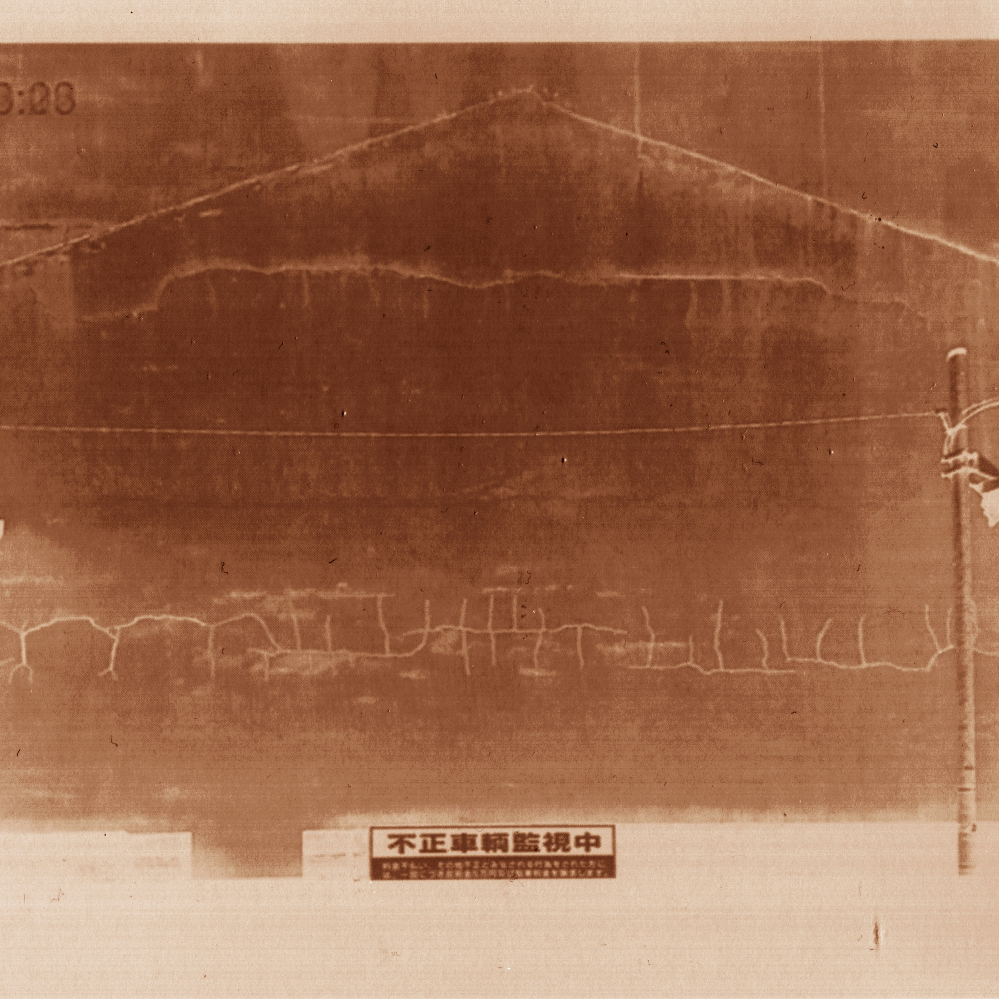
三宅章介個展
8時間の動画をビデオプロジェクタを使って印画紙に露光する。 映像のモチーフは建物の外壁。解体された隣家の痕跡が刻まれている。 陽の光のなかで移ろう陰影が、かってそこにあった人の営みを呟きかける。 一枚の印画紙にそれが焼き付いていく。 定着処理はおこなわないので、環境光に包まれてそのイメージもまた消え去ってゆくだろう。
会期
2019年4月4日（木）〜14日（日）
時間
11:00〜19:00
料金
入場無料。
壁面を撮影した8時間の動画映像
 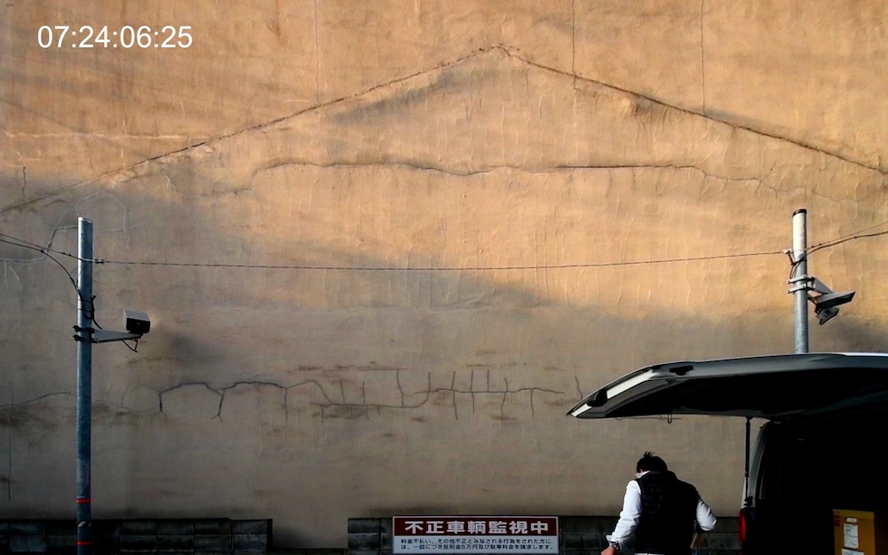
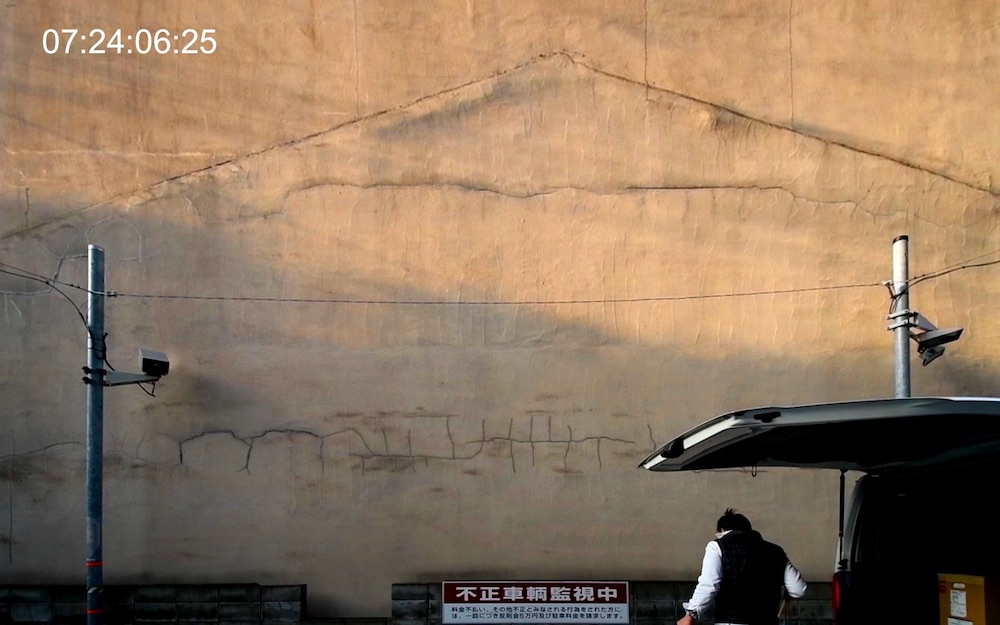

 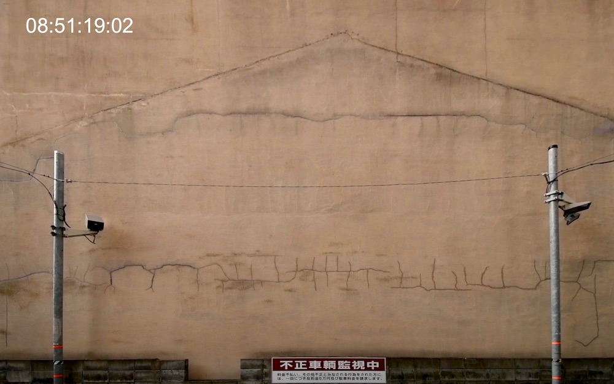
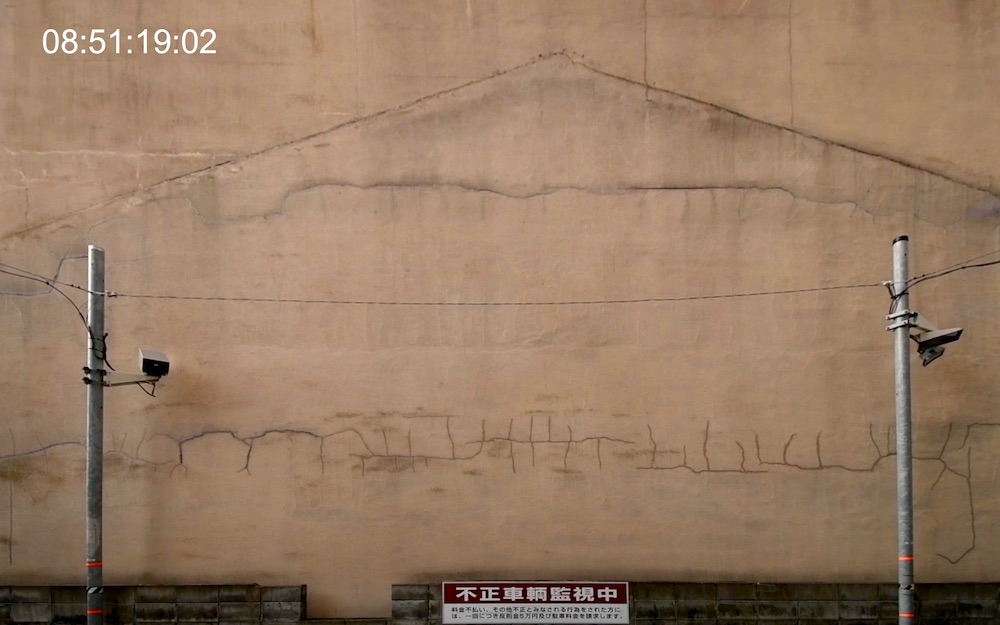
 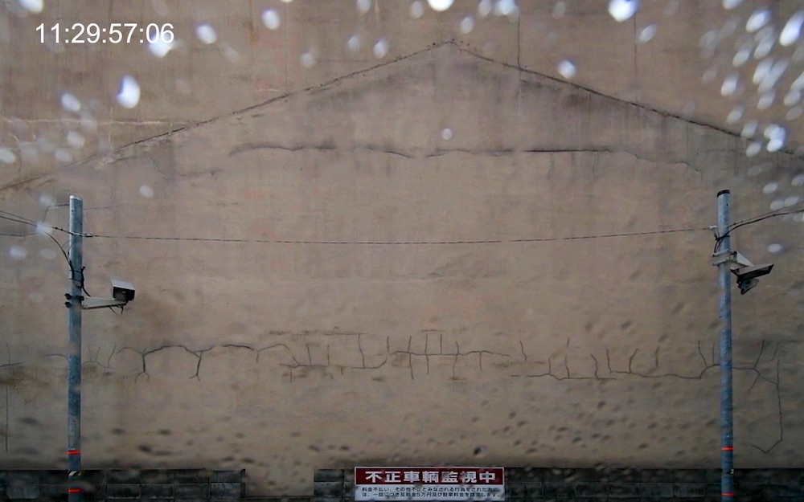
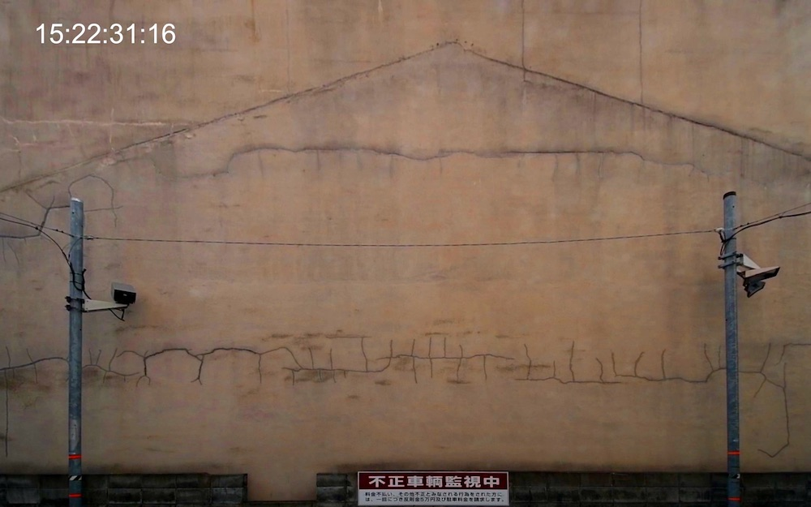
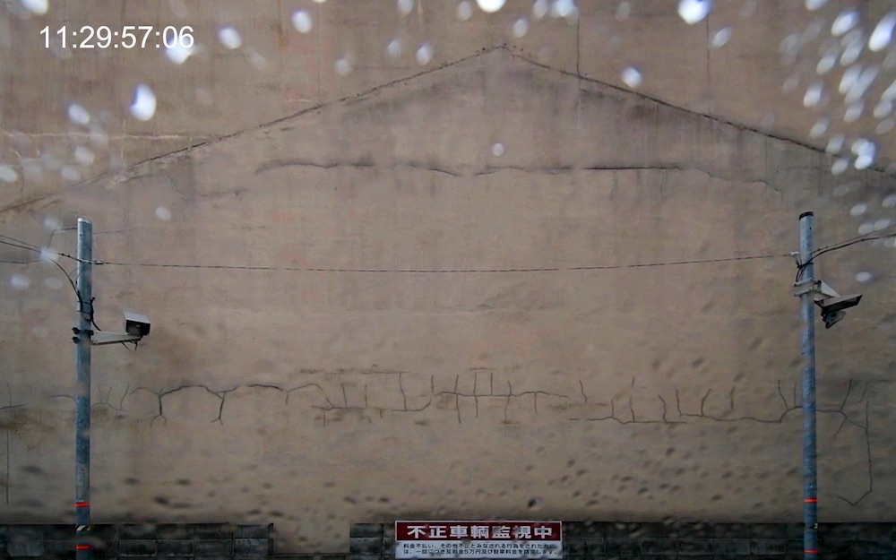
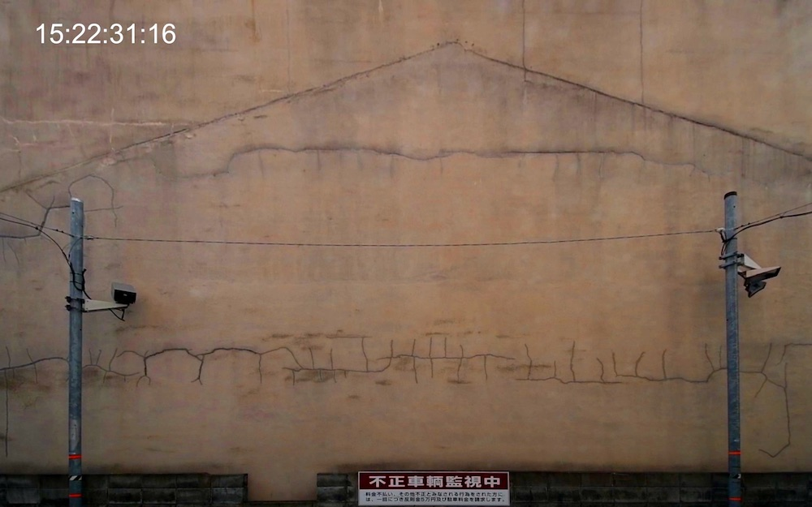3本の動画を壁面に貼った印画紙にそれぞれ順次、露光する
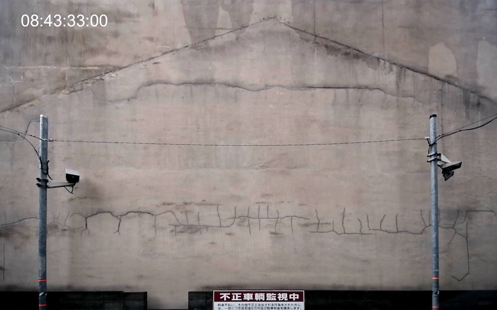

焼き付けられたイメージ像
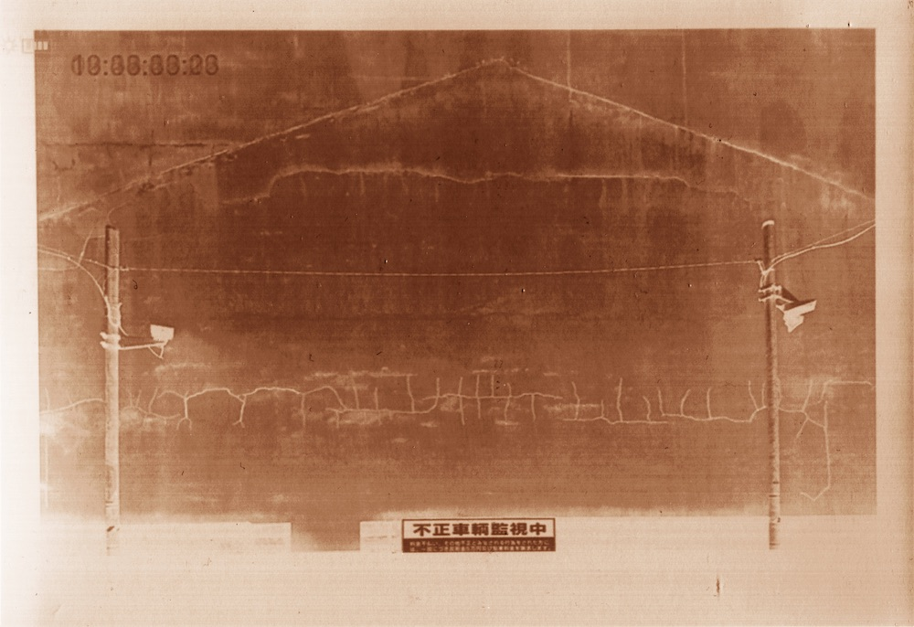会場プラン
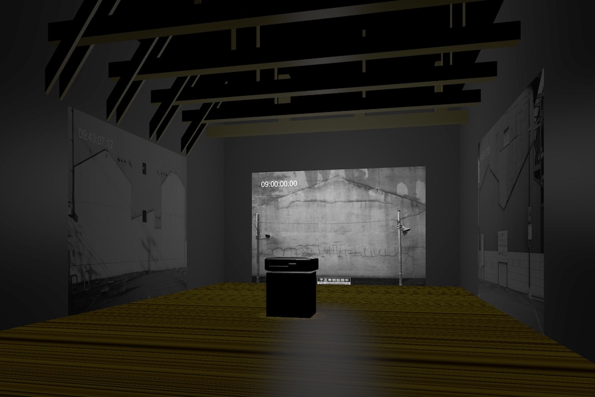インド古典音楽をたのしもう！
安藤真也(サントゥール)+原口順(タブラ)によるコンサート＆レクチャー
いくつかのラーガ(旋律)を聴きくらべや、ターラ(リズムサイクル)一緒に数えて体験するレクチャーとコンサートの会です。
開催日
2019年3月31日(日)
時間
13:00開場 14:00開演
料金
一般料金￥3,000(チャイつき)
学生料金￥2,500(チャイつき)
※チャイは先着20名です。
サントゥールとは
「100 弦琴」という意味の名で、木製ボディに張られた約 100 本の弦をバチで叩き演奏する。
古代インドの聖典リグ・ヴェーダの時代に起源を持ち、何世紀もの間インド北部のカシミール地方で演奏され、シルクロードで広く様々な国に伝わり、西洋ではピアノへと発展した。
タブラとは
北インドの代表的な打楽器。高音と低音の 2 つの太鼓を指と手の平を使って演奏する。
叩く場所により多彩な音色を奏でられ、音階をも表現する。水や木など大地の歌が聞こえてくるような太鼓。
主催
VIDEO PARTY x EZO FILM 2019
京都と札幌の交流上映展
京都を中心に活動するVIDEO PARTYと札幌の上映団体であるEZO FILMの交流上映展の第2弾です。
アニメーション、劇映画、コメディ、実験映画など25作品を上映し、多数の出品作家も来場します。
会場、会期
【京都会場】
会場：Lumen gallery
日時：3/9(土)、10(日)
【札幌会場】
会場：札幌文化芸術交流センター SCARTSスタジオ１・２
日時：3/16(土)、17(日)
料金
1プログラム 当日1,000円、予約800円
2プログラム 当日2,000円、予約16,00円
ご予約サイトはこちら
タイムテーブル
Aプログラム 開場13:00 上映13:30
Bプログラム 開場15:30 上映16:00
主催
EZO FILM
Lumen gallery
写真教室 Tract 作品基礎クラス グループ展「トマソン」
すべてのモノ、コトには、すでに名前が与えられていると言われています。
確かにそうかもしれませんが、ときに写真は、捉えようのない不確かな光景を見せてくれたりします。
写真教室 Tract（トラクト）で、 写真表現を学ぶ作品基礎クラス「トマソン」のメンバーは、どんな景色を見せてくれるのでしょうか。
会期
2019年2月27日（水）- 3月3日（日）
開館時間
13:00-19:30
※土・日は11時開場。最終日は18時まで。
参加作家
植田 仁
駒木 泰男
近藤 歩
桟敷 美和
トミタ アツシ
中村 恵理
優 子
入場無料
ドドド
成安造形大学 メディアデザイン領域 3年生上映会
成安造形大学 メディアデザイン領域アニメーション・CGコース、映像・放送コース3年生の映像作品とゲーム作品を紹介します。
会期
2019年2月16日(土)〜17日(日)
開廊時間
12:00〜19:00
料金
入場無料
平成Calling
平成生まれの映像作家による自主上映会
「平成」という時代が間もなく終わりを迎える今、これをひとつの機会と捉え、このたび上映イベント 「平成Calling」 を企画しました。全国の様々なエリアで精力的に活動を続ける、ジャンルや所属を超えた「平成生まれの作家」による劇映画、実験映画、アニメーション、ドキュメンタリーといった多彩な作品群を観て頂けるプログラムとなっております。新時代に突入しようとする作家達の空気をみなさまと共有し、次の時代へと繋がる場となれば幸いです。
会期
2019年2月9日(土) 10日(日) 11日(月・祝日)
タイムテーブル
| 9（土） | 10（日） | 11（月） | |
| 15:30~ | Program A | Program D | - |
| 16:00~ | - | - | Program A |
| 17:00~ | Program B | Program C | 座談会 |
| 18:00~ | - | - | Program D |
| 18:30~ | Program C | Program B | - |
料金
1プログラム 一般 ¥1000 / 学生¥500
フリーパス 一般¥2000 / 学生¥1000
WEB
https://heiseicalling.jimdofree.com/
お問い合わせ
Email heiseicalling@gmail.com
百年の光跡 写真展京大吉田寮
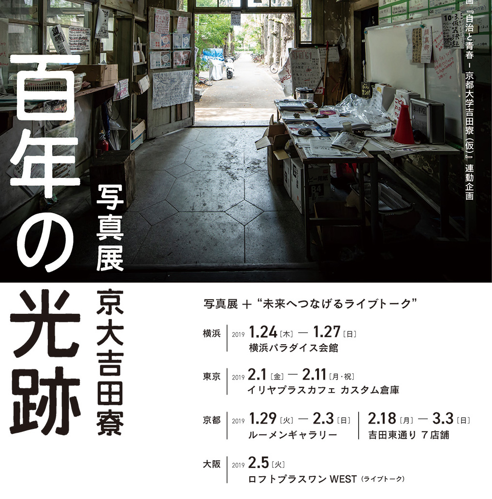
吉田寮の今と“未来へつなげるライブトーク”
現存する日本最古の学生自治寮・京都大学吉田寮。その木造建物は築106年。吉田寮は、学生が自治、自主管理をしながら運営してきた京都大学の福利厚生施設です。年齢、性別、国籍を問わず、月に2500円という格安の寮費で生活することができ、外にも開かれた「場」として機能してきました。しかし、2017年12月に老朽化を理由に大学から出された一方的な文書によって、寮生全員が退去の通告を受けています。本写真展は、現在の写真、古き時代の写真、そして吉田寮のことを説明したパネルを展示することで、在寮問題、自治の歴史、建築的価値などを多くの人に共有していただきたいと思います。
イメージで語られることが多い吉田寮ですが、“今、吉田寮で何が起きているのか？”を生の言葉で伝えていくことが大切だと考え、写真展に合わせたトークイベントも行います。
現在の写真：平林克己（写真家） http://web-ktm.com/
戦前の写真：提供 冨岡勝（近畿大学教授）
会期
2019年1月29日（火）〜2月3日（日）
開廊時間
13:00〜19:00
料金
入場無料
主催
映画「自治と青春-京都大学吉田寮（仮）」製作委員会
https://motion-gallery.net/projects/yoshidaryou
吉田寮記録プロジェクト
トークイベント
2月2日(土)17時~ 料金 : ¥1000
山根芳洋(建築家)、本間智希（RAD）、寮生、藤川佳三（映画「自治と青春-京都大学吉田寮（仮）」監督）
Coolguy(くがいゆたか改め)のビリッビリズム
わしも還暦や。解雇展ちゃうで、回顧展やでえ。
80年代前半、特異な手作り映写機を駆使して疾走した映像作家くがいゆたかが、還暦を迎えた今、映像作家&現代美術家Coolguyとして京都に帰って来ました｡
Lumen galleryとgalleryMainを使った、映像と美術の還暦記念一大個展です。
会期
2019年1月18日(金)〜27日(日)
開廊時間
galleryMain／13:00〜20:00 (月曜日は休廊)
Lumen gallery／8mmフィルム作品〈54分〉／ビデオ作品〈59分〉
| 18（金） | 19（土） | 20（日） | 22（火） | 23（水） | 24（木） | 25（金） | 26（土） | 27（日） | |
| 14:30~ | - | ビデオ | ビデオ | - | - | - | - | ビデオ | ビデオ |
| 16:00~ | - | 8mm | 8mm | - | - | - | - | 8mm | 8mm |
| 17:30~ | ビデオ | ビデオ | ビデオ | ビデオ | 8mm | ビデオ | 8mm | ビデオ | ビデオ |
| 19:00~ | 8mm | 8mm | 8mm | 8mm | ビデオ | 8mm | ビデオ | 8mm | 8mm |
料金
入場無料
お問合せ
★上映・展示作品に関するお問い合わせ／090-3653-3193 (くがい)
★会場等に関するお問い合わせ／050-5240-3486 (ルーメン・ギャラリー)\
再生の軌跡
Digitalized Brainによせて
1995年1月17日、阪神•淡路大震災が起こった日に京都三条にあった立体ギャラリー射手座にて、ある展覧会が開催された。"Digitalized Brain"と名付けられた光田直美（みつだなおみ）による作品は、この大地震により倒壊してしまう。もう彼女に会えない状況の中、当時の友人らが彼女の原案プランを発掘、かたちを変えた再生計画を目論んだ。光田直美と京都精華大学の友人たちによるグループ展、24年前の作品は今いかにして再生できるのか、いかにしてコラボレーションできるのか？陶芸から日本画、映像まで、渾然一体のインスタレーション。
＜参加作家＞
國分麻衣子
小林桃子
白尾健二郎
竹村純子
長島清恵
林ケイタ
吉田眞理子
会期
2019年1月12日（土）～17日（木）
開館時間
11:00～20:00（最終日は17時まで）
入場無料
The missing piece meets The Twins
『顔のない男 〜The missing piece〜』と同時開催の写真&映像展
昨年末の『裏路地で唄へ / The Twins』から約一年経ちました。
今年は写真展とは少し趣を変えて12/24と25の二日間だけのクリスマスイベントとして昨年のgallery mainさんと同じ建物内のlumen galleryさんで写真と映像の個展を催します。
今回の個展作品は前回のようにツインズさんそのものを被写体にしたモノではなくて、僕の中に常に在る幻影(どことなく明るめのスナフキン的な)「顔の無い男」を「僕のカケラを探して」追いかけている、そんなイメージで撮りましたが、個人的に大好きなツインズと絡みたい想いが強く、ツインズの小竹親氏にモデルになって演じて貰った感じです。
スライドムービーとオマケのメイキングムービーにはその時の映像も使用しています。
また、映像にはそれ用にツインズの二人が作 / 演してくれた新録のギターインストルメンタルを数曲挿入させて頂いております。
加えて、ツインズのプロモーション動画(この為用に新録した音源)も撮らせて頂いており、そちらには3曲＋1の楽曲が入る予定ですが、ツインズの新録も、演技を含んだ映像部分も併せて楽曲導入部分の謎の男の演技やナレーション(そのキャスティングも含めて)もお楽しみの物となっております。当日会場にて物販の予定。
椅子席は50席ほどあり、上映スペース以外の壁面に作品を展示し、館内と廊下に物販ブースとtaneさんの飲食ブース、Barスペースなど諸々企画中‼︎
クリスマスという多忙な時期だとは思いますが、どうぞ宜しく。
（クロセロク）
会期
2018年12月24日(月)/25日(火) Xmas2days
開館時間
13:00〜21:00(入場無料)
映像上映時刻
『The missing piece meets The Twins』
◉14:00〜14:30
◉17:00〜17:30
◉19:00〜19:30
飲食（有料）
滋賀県石山の名店Nippon Soul Food & music Bar "tane"さんが数種のお酒とアテを出店して下さります。
◇tane◇
滋賀県大津市栄町3-24
077-533-0635
JR東海道本線&京阪石山坂本線「石山駅」下車 徒歩約5分
https://www.facebook.com/Tane-393394004495987/
ライブ
「The Twins」アコースティックライヴ（TIP制）
24日/25日
◉14:30〜15:00
◉17:30〜18:00
◉19:30〜20:00
◇The Twins◇
正真正銘の双子のNippon Soulデュオ。
ギターを片手に星の数ほどの酒場で人生を歌う。
http://the-twins.net
第40回ぴあフィルムフェスティバル in 京都
2018年のPFFアワード作品集！
今年で40回目となる、インディペンデント映画祭「PFF(ぴあフィルムフェスティバル)」の京都上映を開催します。
「PFF(ぴあフィルムフェスティバル)」は、“映画の新しい才能の発見と育成”をテーマに、1977年にスタートした映画祭です。
しかし、現在では、単なる映画祭の枠に留まらず、映画コンペティション「PFFアワード」を中心に、“新しい才能”を発見し、紹介し、育成していくなどの活動を行っています。
そして、その活動を通じ、日本映画の活性化を推進していく。それが、「PFF(ぴあフィルムフェスティバル)」なのです。
「ぴあフィルムフェスティバル in 京都」ではPFFアワード2018の入選作品18本を一挙上映します。
21日の上映後には北小路隆志さん(映画批評家)と22日のProgram4では鈴木卓爾さん(映画監督)をゲストにお招きしてのトークも開催します。
会期
2018年12月21日(金)〜23日(日)
料金
1プログラム 一般1,000円、学生500円
主催
Lumen gallery
協力
一般社団法人PFF
リンク
タイムテーブル
| 12/21（金） | Program1（19:00~） ＋ゲストトーク | ||
| 22（土） | Program2（13:00~） | Program3（15:30~） | Program4（18:00~） ＋ゲストトーク |
| 23（日） | Program5（13:00~） | Program6（15:30~） | Program7（18:00~） |
ゲストトーク
21日：北小路隆志さん(映画批評家)
22日：出演：鈴木卓爾さん(映画監督)
翔貌～京の音楽家
京都府肖像写真技能士会 第４回写真展
京都府肖像写真技能士会は国家検定を取得した技能士で構成しており、肖像写真の持つ力や素晴らしさを伝えたいと願い、京都で活躍されている人々をテーマにした写真展「翔貌」を毎年開催しております。
今年の第四回展は現在京都を拠点に活躍されている、また京都にゆかりのある音楽家に焦点を当てました。日々音楽表現に情熱を注がれている方々に私どもの表現対象となっていただき、内なる思いや人生観の表現に挑みました。写真の中の音楽家の風貌からそれぞれの「人間力」や人となりを感じていただければ幸いです。
また今回被写体になって頂いたフォークシンガーの古川豪さんとチェリストの石豊久さんがこの写真展のために、それぞれ12月4日と12月15日の夕刻にコンサートを開いて下さいます。肖像写真に囲まれた空間での音楽鑑賞も合わせてお楽しみ下さい。
会期
2018年12月4日(火)〜16日(日)
第四回「翔貌」記念コンサート
2018年12月04日(火)17 : 00～
古川 豪「市井の息づかいと自然の息吹を歌う」
2018年12月15日(土)17 : 00～
石 豊久「無伴奏チェロコンサート」
料金
入場無料
Japanese Art Animation Collection Vol.003
Lumen galleryがセレクトした日本を代表するアートアニメーション作品の上映企画 第3弾！
JAAC (Japanese Art Animation Collection) シリーズについて
日本のアニメーションが世界的なブームとなり、日本再生の原動力のように持ち上げられた近頃の状況を全否定するつもりはないが、JAACに集まった全てのアニメーション作品は、大作アニメーションと同様に扱う事を憚られるほどにシャイでピュアで、何よりも作り手自身に向けられた厳粛な自己洞察の眼差しが潔いと思う。このような「Another Animation」とも言うべき、なんとも呼び様のない個人の内的発露としてのアニメーション技法による映像作品を、「ART ANIMATION」と呼ぼうと思う。
幸いな事に、Lumen galleryの近い位置には、このような作品が膨大に隠されている。
会期
2018年12月1日(土)〜2日(日)
料金
1,000円
主催
Lumen gallery
タイムテーブル（同一プログラム）
16:00
18:00
KINO-VISION 2018
全国の学生作品を一望する上映会！
『京都メディアアート週間』の名称を『KINO-VISION』に変更し、会場を映像専門のLumen Galleryに移して、4年目となります。今回のプログラムは、例年の日本映像学会・映像表現研究会が主催する＜インターリンク＝学生映像作品展（ISMIE2018）＞（参加20校）とICAF実行委員会等が主催する＜インターカレッジ・アニメーション・フェスティバル（ICAF2018）＞（参加24校）から選抜された学生映像作品を上映します。それぞれ日本国内の映像制作の教育を行う大学（大学院を含む）・短大・専門学校の教員推薦による短編映像作品・アニメーション作品の優秀作品集です。また今回も昨年同様に、大阪の“(一般社団法人)ナレッジキャピタル”が主催する全国の教員推薦によるコンペ＜International Students Creative Award (ISCA 2017)＞より入賞入選作品集も合わせて上映致します。ここ1～2年の全国の優秀な学生短編映像作品を一望できる機会となります。是非、ご覧下さい (INA)。
会期
2018年11月16日(金)〜18日(日)
料金
入場無料
主催
KINO-VISION
共催
日本映像学会・映像表現研究会、
ICAF実行委員会＋日本アニメーション学会＆日本アニメーション協会
協力
(社)ナレッジキャピタル＋(株)スーパーステーション
京都精華大学芸術学部映像専攻
http://www.kyoto-seika.ac.jp/kino/2018/index.html
http://seika-eizo.com/
タイムテーブル
| 11/16（金） | A（18:00~） | ||
| 17（土） | F（14:00~） | D（15:40~） | E（16:40~）＋[トーク] |
| 18（日） | B（14:30~） | C（15:30~） |
東京映像旅団 第一回 京都上映会
東京映像旅団—関西初上陸!
東京映像旅団は、日本大学芸術学部映画学科映像コース（現 映像表現・理論コース）の卒業生を中心とした上映団体です。メンバーの年齢は20〜40代、職業は映像ディレクターやエディター、アニメーター、大学教員など様々。メンバーはそれぞれ、独自のテーマを継続し、スタイルやシステムを深化させながら「一人一派」（©松本俊夫）の映像作品を作りつづけています。
2005年に最初の上映会を行ってから、場所を移しつつ、これまで11回の新作上映会を東京で開催してきました。上映会のために制作された作品は、イメージフォーラム・フェスティバルやオーバーハウゼン国際短編映画祭など、国内外の映画祭にセレクトされ、上映されています。
今回はじめて、10人のメンバーで上映会を東京から持ち出すことにしました。各作家の過去作品を２〜３作連続して上映し、プログラムごとに作家によるトークを予定しています。作品を通して知り合うみなさんと、対話できることを楽しみにしています。
会期
2018年10月27日(土)〜28日(日)
料金
1回券 1,000円 (学生 500円)
4回券 2,500円 (学生 1,500円)
東京映像旅団 Tokyo Eizo Brig.
▼HP http://tokyoeizobrig.wix.com/toppage
▼Facebook http://www.facebook.com/TokyoEizoBrig
▼Twitter http://twitter.com/tokyoeizobrig
タイムテーブル
| 10/27（土） | 10/28（日） | |
| 13:00〜14:30 | A | D |
| 14:45〜16:15 | B | C |
| 16:30〜18:00 | C | B |
| 18:15〜19:45 | D | A |
ルーメンシネマテーク Vol.009「山崎幹夫映画個展」
劇場公開の長編劇映画から、3分の実験映画まで、メディアを問わない縦横無尽な稀代の映画作家・山崎幹夫がおくる渾身の18作品!!
作者コメント
80年代の末あたりから、ヴォワイアン・シネマテークやシネマ・ルネッサンスの主宰によって、グループ展あるいは個展でたびたび私の作品を上映していただいて来ました。今回上映する『猫夜』の後半に、Jazz in ろくでなしでの上映の様子や、京都出身の漫画家、湊谷夢吉さんの追悼上映の情宣の様子を見ることができます。つくって来た映画／映像作品の数は100に達しました。商業映画である『プ』を除いて、そのほとんどは自主製作です。
会期
2018年10月16日(火)〜21日(日)
料金
1プロ券／一般¥1,000 学生￥700
3プロ券／一般¥2,500 学生¥1,500
フリー券／一般¥4,000 学生¥2,000
※ギャラリートークは入場無料です。
タイムテーブル
| 10/16（火） | 10/17（水） | 10/18（木） | 10/19（金） | 10/20（土） | 10/21（日） | |
| 13:30 | B (75min) | F (81min) | ||||
| 15:30 | C (80min) | G (82min) | ||||
| 17:30 | A (76min) | F (81min) | G (82min) | A (76min) | D (80min) | E (89min) |
| 19:30 | B (75min) | C (80min) | D (80min) | E (89min) | Talk |
袋坂ヤスオ、平樂寺昌史、園田裕美『ケツ能』
映像以上、舞台未満。
舞踏家の袋坂ヤスオ氏が確立した「ケツ能」を映像作品にしたものを空間に再構成する。映像作品「ケツ能」は、舞台の観客と同じ目線で固定撮影し映像特有の演出を加えた。今回は、その映像を空間に置き換え、展示という形で上演する。空間音響設計は電子音楽家の平樂寺昌史氏。映像で見るのと舞台で見るのとではどう違うのか？会期中、袋坂ヤスオ氏と平樂寺昌史氏による各関連企画もおこなう。
ケツ能について
2014年に袋坂ヤスオ氏が創始。すべて自ら製作した能面を使用している。2017年からはケツ狂言も誕生。現在までにケツ狂言も含めて５作品を発表。異形にして幽玄なその表現は国内のみならず海外の観客からも高い評価を得ている。
会期
2018年10月6日(土)〜7日(日)
料金
展示：入場無料
関連企画入場料：1,000円
関連企画
開場時間18:45、開演時間19:00
6日(土)：電子音楽家 平樂寺昌史
7日(日)：舞踏家 袋坂ヤスオ
お問い合せ
info@sondake.com
http://www.sondake.com/
※「オープンエントリー作品」に関する詳細は、KYOTO EXPERIMENT公式ウェブサイトおよび各カンパニー／アーティストのウェブサイトをご参照ください。
※KYOTO EXPERIMENTでは「オープンエントリー作品」のチケットを取り扱っておりません。チケット取扱いに関しては、直接各カンパニー／アーティストにお問合せください。
Art Sort Boot 2018
Art Sort Boot 2018 開催決定!!
2015年に始まった異種表現交流公募展「Art Sort Boot」第4回目の概要が決まりました｡
写真ギャラリー galleryMain、そして映像ギャラリー Lumen gallery による合同企画の公募グループ展を開催します。
２つのギャラリーは写真／映像が中心ですが、本展の特長は、写真、映像、絵画などジャンルフリーで参加出来る公募展であるという点。アートや表現の幅が広がる中、ジャンルにとらわれず、様々な表現と表現者に出会いたいと思います。
「作家とギャラリーの”きっかけ”として」
ギャラリーは、作家とともに作品を高め、良い展覧会をサポートする場所です。このようなギャラリーとの付き合いや関係性は、作家活動においてはとても重要だと言えます。
また、このグループ展をきっかけに、二つのギャラリーは、作家と作家との相互刺激に満ちた《可能性の場》として機能できると考えています。
これから個展を開きたいと思っている方、どのようなギャラリーだろうとご興味をお持ちの方、この機会に是非ご参加ください。
「日頃の作品の発表の場として」
個展までは出来なくても作品を発表したいと考えている方！
複数ジャンルによる作家グループ展示ですので、さまざまなジャンルの方が来場されることとなります。いつもとは違う方に作品を見て頂くことで、作品ー作家ー鑑賞者の閉塞的な関係性が刺激され、深く熱い交流が生まれ、新たな制作のエネルギーやインスピレーションが生み出される事を期待します。
交流会も用意しておりますので作家同士の繋がりも是非深めてください！
会期
2018年9月18日(火)〜23日(日)
交流会
9月22日（土）19時～22時にて交流会を開催します ※出品作家無料
IMAGE FORUM FESTIVAL
映像アートの祭典
今年で32回目を迎える、映像アートの祭典イメージフォーラムフェスティバルを開催します。
会期
2018年8月25日(土)〜26日(日)
上映スケジュール
| 8/25（土） | 8/26（日） | |
| 11:00 | G マニフェスト | |
| 13:30 | A 東アジアコンペティション1 | M-1 シェリー・シルバー特集１ |
| 16:15 | B 東アジアコンペティション2 | Q クルト・クレン、フレームの王 |
| 19:00 | C 東アジアコンペティション3 | I カニバ |
リンク
ANIME-ASEANツアー in 京都 featuring FOGHORN
日本とASEAN諸国を中心としたアジア各国のインディペンデント・アニメーション作家たちの交流を目的としたプログラム、「ANIME-ASEAN」がはじめて京都に上陸！
日本とASEAN諸国を中心としたアジア各国のインディペンデント・アニメーション作家たちの交流を目的としたプログラム、「ANIME-ASEAN」。2015年から始まり、いよいよ今年ラストを迎えます。本プロジェクトの最終年を記念して「ANIME-ASEAN」がはじめて京都に上陸します！
タイからRUJITANONT THANUT氏、インドネシアからSUBIYANTORO HIZKIA氏、またHIZKIA氏の作品プロデューサーであり、クラフト国際アニメーションフェスティバルのディレクターでもあるChonie Prysilia氏をお招きし、作品の上映とレクチャーを行います。
日本からは京都に短編アニメーション専用ギャラリー「Gojo Short Animation Gallery」をオープンしたばかりのFOGHORNとその所属作家が京都を訪れます。ひらのりょう氏、奥下和彦氏らの代表作品の上映と、作家本人たちによるトーク、さらにはFOGHORN主催の谷川千央氏による、FOGHORNと「Gojo Short Animation Gallery」の野望を語り、互いの作品の上映、およびレクチャーを行うことで日本と東南アジアの交流をさらに深めていきます。貴重な機会となりますので、ぜひともお越しください。
会期
2018年8月22日(水)
上映時間
18:30開場／19時開演
料金
1000円、当日：1500円
ご予約
こちらのサイトよりご予約ください。
予約サイト
ANIME-ASEANとは
ANIME-ASEANは、日本とASEAN諸国を中心としたアジア各国のインディペンデント・アニメーション作家たちの交流プログラムです。 アジアの作家たちを日本へと招聘することで、あまり知られていないASEAN諸国のアニメーションの歴史と現状を紹介、 また、日本作家をアジアへと派遣することで日本のインディペンデントの最新動向を国際的に共有することを通じ、現地のインディペンデント・シーンの活性化を図ります。
また、本プロジェクトを通じて、「旅」「交流」等をテーマにした作品制作にもチャレンジしていきます。
ANIME-ASEANは、有限会社クー、株式会社コーズサッチ、株式会社ニューディアーによるプロジェクトです。
http://newdeer.net/anime-asean/
過去の活動はこちらからご覧いただけます。
〈2017〉
http://newdeer.net/anime-asean/wp-content/themes/anime-asean/img/pdf/animeasean2017.pdf
〈2016〉
http://newdeer.net/anime-asean/wp-content/themes/anime-asean/img/pdf/AA2016_170131.pdf
VIDEO PARTY 2018
各々の個々による様々な映像作品に出合う４日間！
VIDEO PARTYは公募による映像作品を国内外に紹介し交流することを目的とした上映展です。今年も各地より幅広い世代によって制作された様々なジャンルの映像が多数集まりました。今年も京都から上映をはじまります。
観る人作る人、それぞれ様々な形でVIDEO PARTYにご参加下さい。
会期
2018年7月28日(土)、29日(日)、8月4日(土)、5日(日)
上映時間
| 7/28（土） | 7/29（日） | 8/4（土） | 8/5（日） | |
| 13:00-14:30 | Prog.1 | Prog.5 | Prog.8 | Prog.4 |
| 15:00-16:30 | Prog.2 | Prog.6 | Prog.7 | Prog.3 |
| 17:00-18:30 | Prog.3 | Prog.7 | Prog.6 | Prog.2 |
| 19:00-20:30 | Prog.4 | Prog.8 | Prog.5 | Prog.1 |
料金
| 一般 | 学生 | |
| 1回券 | 1,000円 | 500円 |
| 4回券 | 2,000円 | 1,000円 |
| フリーパス券 | 3,000円 | 1,500円 |
主催
Lumen Gallery + AF PLAN
映像音響詩の世界
作曲家中村滋延がつくる音楽としての映像アート
映像音響詩とは作曲作品としての映像であり、視覚的要素を構成に取り入れた音楽です。
海外メディアアートフェスティバルで発表した映像作品が国際ビデオアート賞（ドイツ）、国際ライトイメージビデオアート賞（イタリア）、vid@rte入選（アメリカ）など、数多く受賞している、作曲家の中村滋延がつくる映像音響詩をお楽しみください。
7/22の上映終了後は電子音楽研究家の川崎弘二氏を迎えてのトークを予定しております。
会期
2018年7月20日(金)~22日(日)
上映時間
| 20日（金） | 21日（土） | 22日（日） | |
| プログラムA | 17:30〜 | 16:00〜 | 14:30〜 |
| プログラムB | 19:00〜 | 17:30〜 | 16:00〜 |
料金
1回券 1000円、 2回券 1500円
主催
ノイ創作工房 http://nkmr1950.sakura.ne.jp/wp/event/neu/
共催
Lumen Gallery
推薦紹介文
エコーの効いた破裂音とともに四方から瞬間的に現れるモノクロ像。今、何を見たのか。目が慣れてくると、そこに映っているのは、人の足であり、靴であり、足が着地する地面であることに気づく。1994年に神戸ジーベックホールで発表された《WALK》の、この衝撃的なオーディオとヴィジュアルの切り込みは、未だ視聴覚作品のデジタル制作が一般的でなかった時代、ビデオアートがマルチメディアと言い換えられようとしていた時期に、視覚と音楽に関する強烈なテーゼを押し出した。我々は音を聞いて視覚像を見るのか、あるいは、視覚像を見て音を理解するのか、視覚と聴覚が感覚を共有し合うギリギリの限界線はどこにあるのか。後に中村氏が制作した「眼と耳の対位法」をはじめとする一連の企画は、関西地区を、日本で最も先鋭的なデジタルアートの発信地に仕立て、氏の国際的活躍とともに「映像音響詩」という呼称も拡散した。リズムや速度、形の構成、聞くことと見ることの生理など、合理的に整理された構造美は、たとえば《LUST》に現れる政治、金、性のように、そこに実録された像の具象性によって別ベクトルでの深まりを付与され、時代を乗せる立体的な意味世界へと拡張する。
水野みか子（作曲・音楽学、名古屋市立大学芸術工学部長）
作曲家・中村滋延は1970 年代からいわゆる現代音楽の分野での活動も行いつつ、1980 年代以降はシンセサイザーやサンプラーを使用した作曲を手掛け、さらに1990 年代からは広義の電子音楽を伴う「映像音響詩」と名付けられた一連の映像作品群も手掛けている。本上映会で取り上げる中村の映像音響詩は16 作品にも上り、しかもそのほとんどの作品で作曲家である中村自身が音楽だけでなく映像も制作しているという、その創作スタイルのあり方は少なくとも日本の現代音楽の作曲家としては類を見ないものである。残念ながらこれまで中村の映像音響詩はフェスティバルやコンサートの１プログラムとして上演されることがほとんどで、その創作の軌跡について総括的に体験できる機会はなかった。上映会という形式によって中村の作品群を一度に鑑賞できるこの機会は、「映像音響詩」という中村による独自の創作を捉え直す、またとない貴重なチャンスであるものと考えている。
川崎弘二（電子音楽研究）
ラブ&デストロイ４アニメーション
東京と北海道から4名のアニメーション作品を上映！
同じアニメーション作家といえど、違ったアプローチで作品を作っています。東京から黒坂圭太、前畑侑紀、北海道から大内りえ子、さとうゆかが参加！今回の上映では2 作品ずつ、計8 作品を上映します。
また、会場は東京、札幌、京都の3会場で開催します。会場ごとに上映作品も変わりますので、ぜひお楽しみに！
この作品群を一つの空間で見られるこの機会にぜひご覧ください。
上映終了後は作家トークを予定しております。
会期
2018年6月9日(土)~10日(日)
上映時間
14:30開場/15:00開演/18:00頃終了予定
料金
￥1.500
主催
EZOFILM
協力
ミストラルジャパン、Lumen Gallery
お問い合わせ
ezofilm.n@gmail.com
代表：さとうゆか
フランセスカ・ヨペス映像作品集
不可思議なカタロニアン・コンテンポラリーアート映像7作品を一挙上映!!
パルセロナの現代美術家で映像作家、フランセスカ・ヨペスの日本初映像個展!!
静謐な気配の中で紡がれる豊かなイメージと、微かにしかし存在感溢れる《音》が奏でる、不可思議ヨペスワールド!!
会期
2018年5月25日（金）〜27日（日）
ゲスト
26日(土)の18:00〜と、27日(日)17:00〜、来日したヨペス氏によるトークイベントを開催。(予定)
バルセロナのアートシーンの現在について、大いに語って頂きます｡
上映時間
| 25日（金） | 19:00〜 | |
| 26日（土） | 17:00〜 | 19:00〜 |
| 27日（日） | 16:00〜 | 18:00〜 |
料金
一般上映参加券 ￥1.000 ／ 学生上映参加券 ￥500
※トークイベントは入場無料ですが、入場多数の場合、上映をご覧頂いた方の優先入場とさせて頂きます。ご了承下さい。
日本の皆様へ フランセスカ・ヨペス
わたしはバルセロナ出身のビジュアルアーティストです。
2010年から日本を旅していますが、この旅は、わたしの制作活動に深みを与えてくれます。この旅のあいだ、わたしの手には、ノートとカメラがありました。日本庭園の独特さや、道々の音に魅了されました。自然に対する親しみ深さだけでなく、都市の物質性への強い拘りが、今回のこの展示のために選ばれた映像作品のなかに見いだされることは疑う余地がありません。わたしの目的は、沈思黙考や精神的高揚感、あるいは困惑などといったさまざまな雰囲気を作り上げ、観客を引き込むことです。わたしの芸術は、ある種の救済をもたらす、イメージの版を重ねた映画という痕跡です。
松井 智恵美 『絵と光の宇宙展』

〜地球人だけじゃ 広い宇宙がもったいない〜
普段舞台照明の仕事をしながら、絵の創作活動をしています。
絵を描くようになって、友人や知り合いからは、松井はどこに向かっているのか？と聞かれる事が多くなりましたが、自分の中では、どちらも表現する事に大きな差はなく、日頃から、絵を描いているからこそ舞台照明で表現できること、舞台照明をやっているからこそ描ける絵があると思っていて、自分だから表現できる事を模索しているような気がします。
絵は光によって、より色んな表情を見せてくれます。また、光は絵に反射して、私の描きたい世界を表現してくれる……
私が創り出した宇宙、絵と光を存分にお楽しみに下さい。《松井智恵美》
会期
2018年5月8日（火）〜13日（日）
時間
13:00〜21:00
(11日は13:00〜19:00）
★5月11日（金）
1階カフェすずなりにて記念ライブ‼︎
19:00 start
★最終日展示は18:00まで
写真展「須田派 22名の写真家」
15年以上続く須田一政による写真の私塾、その門下生は総勢100名以上にもなる。個性もさまざま、活動もさまざまですが、継続的かつ精力的に写真を撮り続けている、須田一政のスピリッツを受け継ぐ塾生たちによるグループ展。
尚、4/13-5/13に須田一政 写真展『日常の断片』（gallerySUGATA) 『かんながら』（galleryMain）が開催されている。
会期
2018年4月27日（金）〜5月6日（日）
※月曜休廊
時間
13:00〜19:30
※最終日は18:00まで
出展塾生
１、ありせさくら
２、伊藤翔太
３、岬 たく
４、志野和代
５、袖上香名子
６、田中 靖
７、鳥海茂雄（塾長）
８、長谷川亜子
９、蛭田英紀
１０、藤江綾子
１１、松本孝一
１２、山内 均
１３、山本ゆたか
１４、横江雅人
関西
１、市川龍児
２，大橋一弘
３，加原敏巳
４，後藤剛
５，待夜由衣子
６，西本明生
７，ホイキシュウ
８，鈴木るみこ
三宅章介写真展「切妻屋根の痕跡のための類型学 Typology for traces of gable roofs」

壁面に貼られた5組の印画紙(2m x 3m)に、順次1日6時間 x 3日間、プロジェクタで映像を投影していきます。
露光部が黒化し、イメージが記録されますが、定着処理をしませんので、やがて非露光部も黒化し、そのイメージが薄れていきます。
会期
2018年4月10日（火）〜25日（水）
※月曜休廊
時間
12:00-19:00
作家コメント
街を歩いていると、解体された家屋の痕跡が隣接していた建物の壁面に残されている光景に出くわす。
かって、そこにあった人の営みが刻印されているかのようだ。
その痕跡も時の流れのなかで風化していくことは免れないし、そこに建物が建てば人々の視界から消える。
やがては隣接していた壁も解体され、人々の記憶から跡形なく消えてしまうだろう。
この作品は解体された家屋の痕跡を撮影し、印画紙に投影する試みであるが、あえて薬品処理を施さない。
非露光部が光を受けるにしたがい、記録された映像もまた次第に消滅していくだろう。
山田勇男展『フェヴァリット』
銀河画報社映画倶楽部＆ヤマヴィカフィルムフィルム上映会
独特の世界観が圧倒的に支持されている異能のフィルム映画作家、ドイツ在住の山田勇男氏による、離日直前の緊急上映。ファンタスムスとの共催でお贈りします。
会期
2018年3月31日（土）
ゲスト
山田勇男監督
上映時間
| 31日（土） | ||
| Aプロ | 14:30〜 | |
| Bプロ | 16:30〜 | |
| Cプロ | 18:30〜 |
料金
1プロ 前売：1,000円 / 当日：1,200円
お問い合わせ
phantasmsjp@gmail.com
ご予約は以下Webサイトよりお申し込みください。
http://hamango.net/yamavica/
！8 to !!16［exclamation-8 to exclamation-16 ］
８mm・16mmフィルム上映会
フィルムを愛し、あらい粒子の蠢きや、ときにはスレや傷にまで新鮮な美しさを見出し制作を続ける作家たちの新作上映会『！8 to !!16［exclamation-8 to exclamation-16 ］』
ジャンルを問わない短編映画たちが「フィルムを懐かしむにはまだ早い！」と観る人々に語りかけます。8ミリフィルムと１６ミリフィルムで２０１８年現在進行形、びっくり印の体験となることでしょう！
会期
2018年3月24日(土)〜25日(日)
上映時間
| 24日（土） | ||
| Aプロ | 13:30〜 | |
| Bプロ | 15:00〜 | |
| Cプロ | 16:30〜 | |
| 京都プロ | 18:00〜 | |
| 25日（日） | ||
| 京都プロ | 13:30〜 | |
| Cプロ | 15:00〜 | |
| Bプロ | 16:30〜 | |
| Aプロ | 18:00〜 |
料金
一般 1プロ ¥1,000 / 2プロ ¥1,700 / フリー券 ¥3,000
学生 1プロ ¥500 / 2プロ ¥900 / フリー券 ¥1,500
※各回入替制
主催：Spice films・Lumen gallery
協力：8mmFILM小金井街道プロジェクト
日本映像学会アナログメディア研究会
SpiceFilms〔spicefilm.blog.fc2.com〕
京都精華大学映像コース４回生有志上映会「エイマージュ」
京都精華大学映像コース4回生20名による有志上映会
「エイマージュ」は京都精華大学芸術学部メディア造形学科映像コース4回生20名による有志上映会です。 今年度の卒業制作を中心に過去作、新作の上映を行います。
会期
2018年2月23日(金)〜25日(日)
上映時間
23日（金） 16時30分〜 Aプログラム 18時30分〜 Bプログラム
24日（土） 14時30分〜 Bプログラム 16時30分〜 Aプログラム
18時30分〜 Bプログラム
25日（日） 14時30分〜 Aプログラム 16時30分〜 Bプログラム
18時30分〜 Aプログラム
※各プログラム上映終了後、各出品作家による作品解説トークを行います。
料金
1プログラム 500円
2プログラム 800円
リンク
主催：京都精華大学 芸術学部映像コース4回生有志
お問合せ：代表 梅岡 yuihoumeoka@gmail.com
成安造形大学 メディアデザイン領域 3年生上映会 MIX
成安造形大学メディアデザイン領域 アニメーション・CGコース、映像・放送コース 3年生の映像作品とゲーム作品を紹介します。
会期
2018年2月17日(土)〜18日(日)
時間
12時〜19時
料金
入場無料
瀬々敬久監督作品 『ヘヴンズ ストーリー』ブルーレイ上映
4時間38分の壮大な「自主製作」
2010年に製作された壮大な「自主製作」大作4時間38分。監督は『64(ロクヨン)』などですっかりおなじみになった瀬々敬久。
その長大さもあって公開の機会はかなり限定されているが、瀬々は毎年東京・大阪・京都などで「自主上映」を敢行し続けている。
今回は、7年目にして実現した待望のBD/DVD化を記念してのBD上映。12日には瀬々監督も来場してトークショー(15時過ぎより)も開催予定。
会期
2018年2月10日(土)〜12日(月)
上映時間
10日（土）
10:30〜15:00
16:00〜20:30
11日（日）
10:30〜15:00
16:00〜20:30
12日（月）
10:30〜15:00
15:15〜16:10 瀬々監督トーク
16:30〜21:00
料金
一般¥2,000
学生¥1,000
瀬野大輔 書作展「BLIND」
2018年、福間あきプロデュースイベント・アート第1弾！
映画館という会場を舞台に、「書」は如何に「書」であり続けられるのか？
五感を用い体感していただく、いわゆる書作展とは一風変わったアプローチを試みた、classical(古典的)でありcontemprary(現代的)な展示会です。
会期
2018年1月17日(水)〜21日(日)
20日(土) 13:00〜 レセプション
21日(日) 18:00〜 ギャラリートーク
※ギャラリートークは入場料1500円で、飲み放題です。
リンク
瀬野大輔 HP https://www.daisukeseno.com/
松本先生追悼 京都時代の映像展
日本実験映画の草分け、松本俊夫氏の追悼上映
松本俊夫・1932年生まれ。日本において実験映画をいち早く手掛け、1950年代から60余年にわたり、常に第一線で活躍。その比類の無い実験精神を以て、多岐ジャンルに渡る膨大な数の評論家・美術家・映画作家・映画監醤に多大な影響を与え続ける。また、福岡や京都など各地で精力的に教鞭を執り、その驚陶を受けた学部生・院生は数え切れない。
2017年4月12日 、逝去。享年85歳。巨星墜つ…..
会期
2017年12月15日(金)〜17日(日)
上映時間
15日（金） 19時〜
16日（土） 17時〜・19時〜
17日（日） 16時〜・18時〜
料金
一般 1,000円
学生 500円
主催：Lumen gallery
お問合せ：info@lumen-gallery.com
協力：ダゲレオ出版 FMF NPO法人戦後映像芸術アーカイプ
科研費番号「JSPS科研費15K02184」
JAPANESE ART ANIMATION COLLECTION VOL.002
日本のアートアニメーションコレクション第二弾！
Lumen galleryがセレクトした9人のアニメーション作家による作品集です。
２０１５年に京都で誕生した映像専門ギャラリーのLumen galleryでは数多くの映像作品を紹介してきました。日本には数多くのアニメーション個人作家が存在し、非常にバリエーション豊かな作品が日々生み出されています。ネットで様々な作品が鑑賞出来る反面、作家の価値のある初期作品などは視聴が難しいこともあるかと思います。そのような状況を踏まえて新旧問わず優れたアートアニメーションに焦点を当てた上映展を企画しました。
会期
2017年12月2日(土)〜3日(日)
上映時間
16時〜・18時〜
出品作家
相内 啓司・浅野 優子・大山 慶・久野 遥子・清家 美佳・守田 法子・山村 浩二・横須賀 令子・米正 万也
料金
1,000円
主催：Lumen gallery
お問合せ：info@lumen-gallery.com
『ラオス 竜の奇跡』特別上映会
トークイベント「大切な場所」に合わせて、映画『ラオス 竜の奇跡』の特別上映
サウナの梅湯で同日開催されるトークイベント「大切な場所 ～映画館と銭湯と～」に合わせてLumen galleruにて映画『ラオス 竜の奇跡』の特別上映を行ないます。
会期
2017年11月26日(日)
上映時間
12:30～17:00
料金
1,000円
リンク
トークイベント： https://www.facebook.com/events/1747072602001091/
公式サイト： http://saynamlai.movie
公式FBページ： https://www.facebook.com/saynamlay/
KINO VISION 2017
全国の大学から選抜された作品を上映！
『京都メディアアート週間』の名称を『KINO-VISION』に変更し、会場を映像専門のLumen Galleryに移して、3年目となります。
今回のプログラムは、例年の日本映像学会・映像表現研究会が主催する＜インターリンク＝学生映像作品展（ISMIE2017）＞（参加予定20校）とICAF実行委員会等が主催する＜インターカレッジ・アニメーション・フェスティバル（ICAF2017）＞（参加27校）から選抜された学生映像作品を上映します。それぞれ日本国内の映像制作の教育を行う大学（大学院を含む）・短大・専門学校の教員推薦による短編映像作品・アニメーション作品の優秀作品集です。
また今回は大阪の“ナレッジキャピタル”が主催する教員推薦によるコンペ＜ISCA 2016＞より入賞作品集も合わせて上映致します。ここ1～2年の全国の優秀な学生短編映像作品を一望できる機会となります。是非、ご覧下さい (INA)
会期
2017年11月17日(金)〜19日(日)
入場料
無料
| 日時 | 14:30 | 16:00 | 17:00 | 18:00 |
| 17(金) | - | - | - | Aプロ |
| 18(土) | Fプロ | Bプロ | Cプロ+トーク | - |
| 19日(日) | Dプロ | Eプロ+トーク | - | - |
主催：KINO-VISION
共催：日本映像学会・映像表現研究会、ICAF実行委員会＋日本アメーション学会&日本アニメーション協会
協力：(社)ナレッジキャピタル＋(株)スーパーステーション、京都精華大学 芸術学部 映像専攻
KINO-VISION2017：http://www.kyoto-seika.ac.jp/kino/2017/index.html
：http://seika-eizo.com/kino/2017/index.html
スタン・ブラッケージ個展
海外実験映画再考 Stan Brakhage Shock!!
アメリカを代表する実験映画作家のひとり、スタン・ブラッケージ。1950年代から2002年の遺作まで、今回は日本にて上映可能なほぼ全作品を集めた絶好の機会!!
京都初公開の作品も4作品ラインナップされました。
初めての人も、何回も見たツワモノも、この映像体験をぜひご一緒に!!
会期
2017年10月26日(木)〜29日(日)
上映スケジュール
| 日時 | 14:00 | 16:00 | 18:00 | 19:00 |
| 26(木) | - | - | - | Aプロ |
| 27(金) | - | - | - | Dプロ |
| 28日(土) | Bプロ | Cプロ | ゲストトーク | Dプロ |
| 29日(日) | Bプロ | Cプロ | ゲストトーク | Aプロ |
ゲストトーク
水由 章氏《ミストラル・ジャパン》(予定)
料金
<一般> 1プロ ¥1,000 / 2プロ ¥1,700 / フリー券 ¥3,000
<学生> 1プロ ¥500 / 2プロ ¥900 / フリー券 ¥1,500
主催・共催・協力
主催：ルーメン・ギャラリー
共催：ミストラルジャパン
協力：日本映像学会 アナログメディア研究会
大谷健太郎監督フィルム映画特集
とらばいゆ、NANA、黒執事で知られる大谷監督のフィルム作品公開！！
劇場未公開の初期8mm作品2本と、劇場デビュー作35mm映画「アベック モン マリ」を上映。中でも注目は90分の恋愛映画「青緑」。デジタル化されていない貴重な8mmフィルムをスクリーンに上映します。（他2本はDVDからの上映）
会期
2017年10月6日(金)〜9日(月)
料金
4days pass 一般2,500円／学生2,000円
1プログラムのみの鑑賞券 1,000円
大谷健太郎トークイベント
「僕はこうして映画監督になった」
10月7日（土）17時〜 入場無料
上映スケジュール
| 6日（金） | 7日（土） | 8日（日） | 9日（月・祝） |
| 私と、他人になった彼は 19:00~19:50 | 青緑 13:00~14:30 | アベックモンマリ 13:00~14:40 | 私と、他人になった彼は 13:00~13:50 |
| アベックモンマリ 20:20~22:0 | アベックモンマリ 15:00~16:40 | 私と、他人になった彼は 15:00~15:50 | 青緑 14:20~15:50 |
| トークイベント 17:00~18:30 | 青緑 16:20~17:50 | アベックモンマリ 16:20~18:00 |
福島菊次郎展「写真展」&「ドキュメンタリー上映」
福島菊次郎展／写真展&映画上映 同時開催!!
ジャーナリスト界で「伝説」と語り継がれる報道写真家・福島菊次郎。その撮影キャリアは敗戦直後のヒロシマに始まり、以来、ピカドンから三里塚闘争、安保、東大安田講堂、水俣、ウーマンリブ、祝島........。レンズを向けてきたのは激動の戦後日本である。真実を伝えるためには手段を選ばない。防衛庁を欺き、自衛隊と軍需産業の内部に潜入取材して隠し撮り.........。写真を発表後に、暴漢に襲われ自宅に放火されるなどしたが、それでもシャッターを切り続けた。切り取られた250,000枚の写真が放つ圧倒的な真実から、私たちは権力が隠し続けた「嘘っぱちの日本」を知る事になる。冷静に時代を見つめ、この国に投げ続けた「疑問」を、今を生きる日本人に「遺言」として伝え続ける中で東日本大震災が発生。福島第一原発の事故を受け、彼は真実を求めて最後の現場に向かうのだった。
2015年9月24日。ヒロシマからフクシマへ......権力と戦い続けた老写真家は、94歳でその生涯を閉じ、新たな日本の「伝説」となった。
写真展
会期
2017年9月13日(水)〜9月24日(日)
時間
13時〜19時30分(最終日は18時まで、19日（火）は休廊)
会場
galleryMain
料金
入場無料
ドキュメンタリー上映
上映作品
『ニッポンの嘘』〈カラー／114分／2012年〉
日時
| 日時 | 13:30 | 15:30 | 16:00 | 18:00 | 19:00 |
| 15日(金) | - | - | - | - | ○ |
| 16日(土) | ○ | - | ゲストトーク | ○ | - |
| 17日(日) | ○ | - | ゲストトーク | ○ | - |
| 18日(祝) | - | ○ | - | ○ | - |
| 22日(金) | - | - | - | - | ○ |
| 23日(祝) | - | ○ | - | ○ | - |
| 24日(日) | - | ○ | - | ○ | - |
上映協力券
￥1,000均一 (当日のみ。前売・予約販売しません。)
会場
Lumen gallery
トークゲスト
プロデューサーの橋本佳子氏を予定。
2017 BUSAN-KYOTO VIDEO EXHIBITION
10年続く釜山と京都の映像交流 初の日本開催!!
2007年に開始されたEX-BK (EX=Exchange,Experimental,Exhibition/BK=Busan,Kyoto)は京都と釜山における映像作品のエクスチェンジ•プログラムです。毎年、美術系学生からキャリアある映像作家まで自由にミックスされた短編映像プログラムを釜山のインデペンデントスペースにて上映してきました。出品作家は釜山の上映会に参加し、京都と釜山の作家同士が交流することで、国境を越えた制作スタイルや考え方の違いに双方刺激を受け、さらに制作意識を高めることを目的としてきました。
開催10年目を迎える本年は、釜山からジョ•ワンジュン氏（プログラムディレクター）を迎え、京都五条Lumen galleryにて上映会を開催します。今回の韓国プログラムは「記憶、記録、蓄積」をテーマとした実験的映像が予定され、それに呼応した京都プログラムは、今夏にLumen galleryにて開催されたVIDEO PARTY 2017からの最新短編セレクションです。真摯な視線を感じる韓流実験映像と日本の多様な個性を放つ個人映像の共演、ぜひともご期待下さい。
会期
2017年9月9日(土)〜10日(日)
上映時間
各日17:00〜(プログラムA) ,19:00〜(プログラムB)
入場料
500円（1プロ券）、￥1,000（2プロ券）
Art Sort Boot 2017
Art Sort Boot 2017 開催決定!!
2015年に始まった異種表現交流公募展「Art Sort Boot」第3回目の概要が決まりました｡
写真ギャラリー galleryMain、そして映像ギャラリー Lumen gallery による合同企画の公募グループ展を開催します。
２つのギャラリーは写真／映像が中心ですが、本展の特長は、写真、映像、絵画などジャンルフリーで参加出来る公募展であるという点。アートや表現の幅が広がる中、ジャンルにとらわれず、様々な表現と表現者に出会いたいと思います。
「作家とギャラリーの”きっかけ”として」
ギャラリーは、作家とともに作品を高め、良い展覧会をサポートする場所です。このようなギャラリーとの付き合いや関係性は、作家活動においてはとても重要だと言えます。
また、このグループ展をきっかけに、二つのギャラリーは、作家と作家との相互刺激に満ちた《可能性の場》として機能できると考えています。
これから個展を開きたいと思っている方、どのようなギャラリーだろうとご興味をお持ちの方、この機会に是非ご参加ください。
「日頃の作品の発表の場として」
個展までは出来なくても作品を発表したいと考えている方！
複数ジャンルによる作家グループ展示ですので、さまざまなジャンルの方が来場されることとなります。いつもとは違う方に作品を見て頂くことで、作品ー作家ー鑑賞者の閉塞的な関係性が刺激され、深く熱い交流が生まれ、新たな制作のエネルギーやインスピレーションが生み出される事を期待します。
交流会も用意しておりますので作家同士の繋がりも是非深めてください！
会期
2017年8月30日(水)〜9月3日(日)
時間
13時〜19時30分(最終日は18時まで)
交流会
9月1日(金) 19時〜22時 ＊出品作家無料
VIDEO PARTY 2017
多様な個人映像の世界
今年で5回目となる個人映像の公募展です。国内外から応募された65作品を一挙上映します。
毎年応募された作品は海外でも紹介しますが，この京都上映から始まります。多様な個人映像の世界にぜひご参加下さい。
会期
2017年7月28日(金)〜7月30日(日)
料金
1プログラム 1,000円
フリーチケット 3,000円
リンク
上映時間
| 日時 | 16:00 | 17:00 | 18:00 | 19:00 |
| 28日（金） | P1 | P2 | ||
| 29日（土） | P3 | P4 | ||
| 30日（日） | P5 | P6 |
宝•映•島 台湾映像祭
最新台湾映像作品展
台湾の台中市を中心に映画祭を開催するなど若手の映像を紹介し、国内外に情報を発信している未来電影日がセレクトした最新台湾映像 5プログラムを上映します。
アニメーションから短編映像まで洗練された技術と表現の映像をぜひお楽しみください。
会期
2017年7月21日(金)〜7月23日(日)
| 時間 | 16:00 | 18:00 |
| 7月21日(金) | - | 第1組 |
| 7月22日(土) | 第2組 | 第3組 |
| 7月23日(日) | 第4組 | 第5組 |
料金
1プログラム 500円
3プログラム 1,000円
5プログラム 2,000円
関連企画
“ 土鼈 - どべつ - ” 何宇倫 写真展
会期：7月19日(水)〜7月30日(日)13:00ー19:30 ※月・火休廊
会場：galleryMain
帰巣譚〜きそうたん〜
〜福間良夫 没後10年追悼 映像作品展〜
70年代初頭から今日まで、40年間続く日本最長シネマテーク活動グループ【FMF】。この奇跡の集団の立ち上げに参加し、牽引し続けたのが、福岡の映像作家・福間良夫でした。
彼は、残念なことに2007年6月、腹部大動脈瘤の破裂によりこの世を去りました。
彼の遺した少なくない8mmの映像作品群は、没後10年の月日を経て、ますますその魅力を増しているように思われます。
今回は、福間作品の一部12作品と、櫻井篤史(筆者)との映像交換。そして、今日のスタッフも含むFMFの歴代参加スタッフ作品セレクト、さらには、FMFを40年支援し続けているイメージフォーラムのかわなかのぶひろ氏、福間良夫のパートナーであり同士であった宮田靖子氏、そして緊急上映として、先日2017年4月12日に逝去した映像作家・松本俊夫氏の作品を合わせてお届けします。
貴重なこの機会、是非お見逃しなく。
お誘いあわせてお運びください。
会期
2017年6月28日(水)〜7月2日(日)
上映スケジュール
| 時間 | 13:00 | 15:30 | 17:30 | 19:30 |
| 6月28日(水) | - | - | - | 【A】 |
| 6月29日(木) | - | - | - | 【B】 |
| 6月30日(金) | - | - | - | 【A】 |
| 7月1日(土) | - | 【A】+Talk | 【B】 | 【C】 |
| 7月2日(日) | 【C】+Talk | 【B】 | 【A】 | - |
入場料
1回券 ¥1,000
フリー券 ￥2,500（学生2,000円）
共催
ルーメン・ギャラリー／フィルム・メーカーズ・フィールド
協力
メタ フィルム マーヴェラス／かわなかのぶひろ
セイリー育緒プロデュース アイパッドアーミー企画展vol.1
「ママン」～あなたは愛でずぶ濡れになる～ 加地 猛展
アイパッドアーミーとは.......
プロデュースを手掛けるセイリー育緒のコトバ。「私にとって写真=フィルム。これは絶対。でもある日、加地猛のオカン画像を見てショックを受け、映像の表現ツールとしてipadやスマホの身軽な可能性を追求してみたくなった。つまり写真家を目指さない人間の単発的な画像作品を展示表現していく試みが、このアイパッドアーミーなんです。」
つまり、セイリー育緒 プロデュース アイパッドアーミーとは 、面白いデジタル画像を撮りためてしまった場合に所属できる非写真家集団なのである。
会期
2017年5月31日(水)〜6月4日(日)
時間
13:00 - 19:30
入場料
¥500（限定グッズ付）
緊急ベント
初日の5月31日(水)は、18時から会場にいしいしんじさん登場!!
その場で小説パフォーマンス!!
リンク
平行宇宙

オガサワラミチ個展〜ドローイング & オブジェ
2017年に入ってから描きあげた新作100点以上の作品を展示します！
会期
2017年5月16日(火)〜21日(日)
時間
13:00 - 19:30
ライブペインティング
日時
5/21（sun.）19:00～
音楽
There is a fox & Takeshi Udo
※ライヴのみ入場料1000円（缶バッチ付き）です。
リンク
鈴鹿芳康 YASU SUZUKA PINHOLE PHOTO EXHIBITION
個展 聖地 sacred places
KG+ ASSOCIATED PROGRAM
風曼荼羅 WIND MANDALA -日本の聖地より- at galleryMain
風曼荼羅 WIND MANDALA -世界の聖地より- at Lumen gallery
◎特別展示企画 at Lumen gallery
鈴鹿芳康の30年にわたるピンホール写真作品から厳選された特装版ポートフォリオを展示・販売致します。
会期
2017年5月3日(水)〜14日(日)
休廊日：5月8日(月)
時間
13:00ー19:30 ＊最終日は18:00まで
会場
Lumen gallery + galleryMain
入場料
500円
対談
14日(日) 13:00〜
「鈴鹿 芳康 × 佐伯 剛 対談トーク」
＊トークに関しては入場無料!
（佐伯 剛氏：風の旅人 Founder, Editor-in-Chief 風の旅人 発行人・編集長）
リンク
鈴鹿芳康 Official web site jp.yasusuzuka.com
京都を拠点に世界中で活動を行っている鈴鹿芳康の公式ホームページです。
It is an official homepage of Yasu Suzuka who is acting all over the world based on Kyoto.
主催：galleryMain, Lumen gallery
協力：Awagami Factory
相原信洋七回忌追悼映像展

元祖サイケデリックアニメーションのデジタルリマスター上映
相原信洋は、1944 年に神奈川県に生まれ、デザイン学校で学んだのち、スタジオゼロ やオープロダクションで TV アニメのアニメーターとしての仕事に取り組んでゆく。そ の一方で、1965 年より個人としてのアニメーション制作も開始する。
相原のフィルモグラフィー には、実験的なドキュメンタリーと呼ぶしかない『シェルター』(1980)および『マイ・シェ ルター』(1981)や、家屋の壁面や屋根に映写機からの映像を投影する『リンゴと少女』(1982)、女性のヌードと夕暮れの野原が多重露光される『とんぼ』(1988)など、異 質性を持った作品が幾つも存在する。安易な分類や解釈を拒否する、狭義のアニメーショ ン作家にとどまらない異質性を持ったアニメーション作家、それが相原信洋なのだと思う。（阪本裕文氏フライヤー寄稿文より抜粋）
会期
2017年4月28日（金）〜30日（日）
上映スケジュール
28日（金） ・19:00
29日（土） ・17:00 ・18:30（ゲストトーク） ・19:30
30日（日） ・16:00 ・18:00
※各回 同プログラム
ゲストトーク：阪本 裕文（映像研究者）× 大西 宏志（京都造形芸術大学 教授）
入場料
1,000円
※ゲストトークは無料
感謝
大島 治
阪本 裕文
相内 啓司
※今回上映される作品は JSPS 科研費 15K02184 の助成を受けデジタルリマスターしたものです。
相原信洋七回忌追悼映像展プレイベント『いい仮現な時間』
フィルムがかかった16mm映写機の駆動そのものを見る試み
間欠的に連続して短時間に入れ替わっていく写真が、「映画」として成立している瞬間を、実際に目にした事はありますか？
映像メディアが、アナログテープからデジタルへ、そしてデータ化されていく中で、フィルムを知る人はどんどんいなくなっています。
本企画は、アニメーション映像作家相原信洋氏が教鞭を執った大学の、学生課題とみられるシネカリ（フィルム膜面に、針などで直接描き込む）フィルムを16mm映写機にかけて、その様子を見ると言う展示企画です。
連続した写真や絵が、ダイナミックに動き出す様子を是非目撃しておいてください！
会期
2017年4月20日（木）〜23日（日）
開廊時間
13:00〜19:00
入場料
200円
※次週の相原信洋個展チケットをお求めの方は入場無料
比叡山千日回峰行写真展「光永圓道阿闍梨」写真 打田浩一
稀代の荒行「千日回峰行」に密着して13年。打田浩一渾身のフォトグラフ!!
断食・断水・不眠・不臥の堂入りなど、比叡山に伝わる超人的な荒行「回峰行」。
13年に渡り、若き大行満大阿闍梨の行の姿を追って、その真実を赤裸々に描き出したものである。
会期
2017年4月11日(火)〜4月16日(日)
開廊時間
13:00〜19:00
打田浩一 経歴
1978年 大阪写真専門学校卒
1994年 写真集「回峰行」出版
1998年 「ぎゃらりぃ西利」にて、写真展「回峰行」開催
1999年 京都「PARKER HOUSE ROLL」にて、写真展「BLUES LIVE IN JAPAN」開催
2000年 京都「PARKER HOUSE ROLL」にて、写真展「CHICAGO BLUES FESTIVAL」開催
2001年 京都「PARKER HOUSE ROLL」にて、写真展「CHICAGO CLUBS」開催
2016年 8月京都「gallery Main」と「Lumen gallery」にて、写真展「BLUES&CIGARETTES」を同時開催
2016年12月末 写真集「千日回峰行」出版
比叡山千日回峰行 光永圓道阿闍梨写真集
◉最新写真集『比叡山千日回峰行 光永圓道阿闍梨写真集』《春秋社刊／¥4,600 (税別) 》
★緊急発売!! 残部希少!! 是非この機会にお求めください。
第四回 景聴園“ となりあう借景 ”
日本画は、定義出来ない。
日本画とは何か。
追えば追うほど朧げになる日本画の姿を、それぞれの場所から共有しているのが景聴園（けいちょうえん）です。
結成五年目を迎え、景聴園では日本画のもつ曖昧さを肯定し、制作におけるキーワード─現象、座る、郷土愛、時間、土、、、─を掘り下げてきました。そこから見えてきた、五者五様の日本画との関わりを継いでいくことで、“日本画とは何か”という問いへのアプローチを試みます。
「借景」とは、遠くにある山や樹木などの景色を庭園の背景として取り入れる作庭の手法です。景聴園の作家五名の制作を庭園に例えるならば、全員の共通点は“日本画”という山を借景に用いていることでしょう。
ひとつひとつの庭から見える山の形は異なりますが、各々の尺度によって切り取られた景色がとなりあうとき、日本画の姿を垣間見ることができるのではないでしょうか。
京都での開催は四年ぶりとなる本展を、是非ともご高覧下さい。
会期
2017年3月29日(水)〜4月9日(日)
※休廊 4月3日(月)、4月4日(火)
開廊時間
平日 13:00ー19:30
土日 11:00ー19:30
メンバー：上坂秀明、合田徹郎、服部しほり、松平莉奈、三橋卓
アートディレクション/デザイン：乃村拓郎
アーカイブ/テキスト：古田理子
企画：景聴園
主宰：景聴園
協賛：株式会社 吉祥、株式会社 名村大成堂
◆トークイベント
4月2日（日）16:00〜18:00
「日本画に就て」
日本画を考える会・景聴園として、メンバーそれぞれが思い描く日本画の拠り所についてトークします。
◆座談会
4月6日（木）16:00〜18:00
「絵描きとして生きる
」
現役芸術大学生を対象にした座談会です。
卒業後の作家としての生き方を景聴園メンバーと語らいましょう。
（一般参加者大歓迎です）
景聴園（けいちょうえん）は、京都市立芸術大学で学んだ日本画グループです。五者五様の日本画との関わりを継いでいくことで、「日本画とは何か」という問いへのアプローチを試みます。
リンク
VIDEO PARTY × EZO FILM 2017
京都と北海道の映像作家が集まった！
京都で行われているKYOTO VIDEO PARTYと北海道で活動しているEZO FILMの交換上映会！
札幌（第二マルバ会館）と京都（Lumen gallery）の２会場で上映します。
学生作品から映像作家の作品まで、ショートフィルム、実験映画、劇映画、アニメーションなど、なんでもありの上映会。乞うご期待！
札幌会場は第二マルバ会館にて2017年2月17（金）〜18（土）に開催します。今回札幌から作家も多数来場されます。
会期
2017年3月3日(金)〜3月4日(土)
上映時間
| 時間 | 3日（金） | 時間 | 4日（土） |
|---|---|---|---|
| 17:30 | 開場 | 16:30 | 開場 |
| 18:00 | EZO FILM | 17:00 | VIDEO PARTY |
| - | - | 18:30 | 作家トーク |
| 19:30 | VIDEO PARTY | 19:00 | EZO FILM |
料金
各プログラム 1,000円
映画「あったまら銭湯」京都上映会
淡路島出身俳優・笹野高史主演＆ALL淡路島ロケ映画の上映会
淡路島にある小さな銭湯「扇湯」。
銭湯の番台・前田は４世代にも渡り、島の人々の様々な人間関係を見守ってきた。
常連客のひとり、佐々木正信(67)は、高校生の時、ある女の子がきっかけで銭湯に行くようになり、50年たった今も通い続けている・・・
２代目番台の前田は、佐々木正信の高校時代を見つめ、４代目番台の前田は、６７歳になった佐々木正信を見つめる。
これは、銭湯で繰り広げられる不器用な男の恋物語である。
会期
2017年1月20日(金)〜1月22日(日)
上映時間
| 時間 | 20日（金） | 21日（土） | 22日（日） |
|---|---|---|---|
| 13:00 | - | ○ | ○ |
| 15:00 | - | ○ | ○ |
| 17:00 | - | ○ | ○ |
| 19:00 | ○ | ○ | ○ |
料金
1,000円※当日券のみ
Lumen Cinematheque Vol.008 黒坂圭太全仕事
アニメーションの奇才による新作を含む全作品と素材を展示！
還暦祝いに（？）全作品を上映していただける事となりました。僕にとって京都といえば今から30年前、映像を学びたくて松本俊夫先生に押しかけ入門した「ゆかりの場所」なので最高に嬉しい。ルーメンさん有難う！でも回顧展じゃなく「イマ」を観ていただきたいから新作と格闘してます。「クソジジイの悪あがきショー」を見に来てくださいませ！！
《黒坂圭太》
会期
2016年12月13日(火)〜12月18日(日)
上映時間
| 時間 | 13日（火） | 14日（水） | 15日（木） | 16日（金） | 17日（土） | 18日（日） |
|---|---|---|---|---|---|---|
| 13:30 | - | - | - | - | B | ゲスト対談 |
| 15:00 | F | D | E | A | E | C |
| 17:00 | C | E | F | B | A | D |
| 19:00 | A | B | C | D | トーク | F |
料金
一般１プロ券 ￥1000 ／ 学生１プロ券 ￥900
一般３プロ券 ￥2500 ／ 学生３プロ券 ￥2200
一般フリー券 ￥4000 ／ 学生フリー券 ￥3500
※ギャラリートーク・作家対談は入場無料です。
同時開催
アーティスト黒坂圭太のすべて！！ galleryMain
最新作発表!! 「山川景子は振り向かない」(HD/B&W/2016) *ループ上映版
映像作品関連資料展示!
・撮影素材・絵コンテ・イメージボード・絵画・イラスト・ドローイング etc.
参考ループ上映
『変育芸作品第1 番』の原型になった「VARIATION」 ほか、ライヴペイントの記録など9本の資料映像を特別公開!
会期
12月13日（火）〜18日（日）13:00〜20:00
料金
入場無料
第二回 京都府肖像写真技能士会写真展
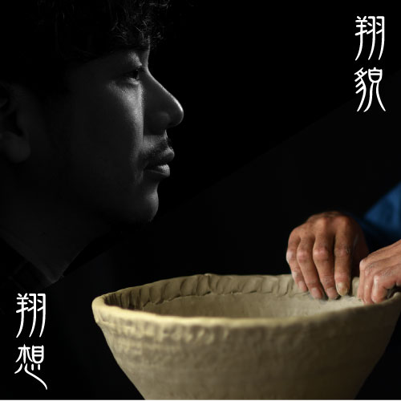
翔貌〜京のアーティスト〜翔想〜京のアート
京都府肖像写真技能士会は京都で活躍されている人々を題材に写真展「翔貌」を毎年企画・開催しております。今年の第２回展は、古来より京都の文化を牽引してきた芸術に携わっていらっしゃる方々をテーマにしました。
日々創作活動をされている芸術家の方々に今回は創作の対象となって頂き、スタジオポートレイトやロケーションポートレイト、カラー写真そしてモノクロ写真など多様な型で、内に秘めたる思念や情熱の表現に挑戦しました。
また特別企画として、写真展会場に隣接するギャラリーで「翔想」と題し、モチーフとなっていただいた芸術家の方々の作品展を同時開催いたします。様々な作品と肖像写真を相互に鑑賞していただき、芸術家の人間力を多重により深く感じていただければと思っております。
会長 菊谷泰博
会期
2016年12月6日(火)〜12月11日(日)
会場
翔貌／Lumen gallery
翔想／galleryMain
料金
入場無料
相内啓司 映像&インスタレーション作品展
アニメーション映像作家・美術家／相内啓司が、約40年の作家人生を俯瞰させる渾身の未来志向レトロスペクティヴ!!
イメージへの回帰 (映像作品上映)
私たちが世界に投げかける〈眼差しの欲望〉はけっして〈私〉という存在意識を保証するものではない。その〈眼差し〉は私たちがある文化圏に産み落とされた瞬間から、すでに、あるいはそれ以前から他者の欲望に貫かれている。そうした他者の欲望とは何かを〈眼差しの欲望〉という視点から問い直すのが、ヴィデオアートの一つのあり方だ。私自身もそのようなスタンスで作品を作り続けてきた。
会期
2016年11月24日(木)〜12月04日(日)
12/04(日)の波多野哲朗氏との対談は￥600／作家トークは無料上映時間
| 時間 | 24日（木） | 25日（金） | 26日（土） | 27日（日） | 30日（水） | 1日（木） | 2日（金） | 3日（土） | 4日（日） |
|---|---|---|---|---|---|---|---|---|---|
| 13:00 | - | E | C | D | - | - | C | A | E |
| 15:00 | - | 作家トーク | - | 作家トーク | - | - | - | 作家トーク | ゲスト対談 |
| 15:40 | E | A | B | E | E | B | E | E | B |
| 18:30 | A | D | E | A | A | D | A | D | C |
料金
【一般】1プロ券￥1,000／3プロ券￥2,500／全プロフリー券￥3,500
【学生】1プロ券￥500／3プロ券￥1,200／全プロフリー券￥2,000
重力の光景 (インスタレーション)
「重力の光景」は、世界中のアーティストから送られたそれぞれの地点の石を、特製の金属タワーに納め懸垂させて、世界の重力点を、北緯 : 34.59.49.681、東経 : 135.45.55.374に集中させ、重力の視覚化を図った作品です。
会期
2016年11月24日(木)〜12月04日(日)
連日13:00〜20:00
インスタレーション展示は期間中無休です。
料金
入場無料
KINO VISION 2016（旧「京都メディアアート週間）

国内の様々な映像作品をセレクト上映！
2年前まで『京都メディアアート週間』の名称で行ってきたイベントですが、昨年より会場もLumen galleryに変わり、主催もKINO-VISION単独で企画運営することになり、昨年に引き続きイベント名も『KINO-VISION 2016』で開催します。
プログラムは、例年の日本映像学会・映像表現研究会が主催する＜インターリンク＝学生映像作品展（ISMIE2016）＞（参加19校）とICAF実行委員会等が主催する＜インターカレッジ・アニメーション・フェスティバル（ICAF2016）＞（参加28校）から選抜された学生映像作品（多様な短編作品・アニメーション作品）を上映します。それぞれ日本国内の映像制作を行う大学（大学院を含む）・短大・専門学校の教員推薦による優秀作品集です。また＜VIDEO PARTY 2016セレクション＞は、短編映像作品の一般公募（主に若手映像作家や学生）によるプログラムからの選抜作品集です。
会期
2016年11月18日（金）～20日（日）
料金
入塲無料
主催
KINO-VISION
共催
日本映像学会映像表現研究会、ICAF実行委員会＋日本アニメーション学会＆アニメ－ション協会
協力
京都精華大学芸術学部映像コース、VIDEO PARTY
リンク
第2回「サヴァイヴァル 8」
2回目の開催となる8ミリフィルム作品上映会
8ミリで生き抜く！
誰が宣告したわけでもないのですが、8ミリフィルムは終わったと一般には思われているようです。
一昨年（2014年）、福岡のフィルム・メーカーズ・フィールド主催の上映会「GoodByLAB」に接続し、発展させようと、「サヴァイヴァル 8」を開催しました。この時、15名の作家の出品をみました。
今回、第2回の「サヴァイヴァル 8」開催に際して、主催者からの呼びかけを前回より広範囲に行い、ヴェテランから若手まで合わせて22名の作家の参加となりました。
絶望的な逆境にもかかわらず、8ミリフィルムによる制作活動は存続しています。そこには何か本質的なものが潜んでいるように思います。作品制作とは機材や材料に依拠したものではないと言う認識もそうでしょう。それも含め、「8ミリで生き抜く！」という覚悟は、表現一般とは何かを改めて確認することにつながっていくと信じています。
「サヴァイヴァル 8」主催
メタ・フィルム・マーヴェラス／MFM（Meta Film Marvelous）（森下明彦）
フィルム・メーカーズ・フィールド／FMF（Film Makers Field）（宮田靖子）
会期
2016年11月11日（金）～13日（日）
料金
￥1,000（第1部＋第2部／当日券のみ）
＊「みんなで話そう」は入塲無料！
お問合せ
info@lumen-gallery.com
主催：
メタ・フィルム・マーヴェラス／MFM（Meta Film Marvelous）
フィルム・メーカーズ・フィールド／FMF（Film Makers Field）
共催：
ルーメン・ギャラリー／Lumen gallery
『何番目かの空白』室千草個展 映像インスタレーション
国内外で映像インスタレーション作品を多数発表している室千草の新作個展
今回発表する新作映像インスタレーション作品『何番目かの空白』は、本をパラパラとめくった時、一枚だけ真っ白なページがあったという出来事から作品の構想がうまれ、人の記憶の層、風景の層、その層と層の間にあるちょっとした隙間に、なにかしらの空白や暗闇が存在していたらという心象風景を、映像化しインスタレーション作品として展示します。
会期
2016年11月1日（火）〜６日（日）
時間
13:00〜19:30
料金
￥500（作品パンフレット付き）
JAPANESE ART ANIMATION COLLECTION VOL.001
日本を代表するアートアニメーション作家の作品を10作家11作品上映
ロシアのアニメーションの巨匠、ユーリー・ノルシュテイン氏が来日され、京都でスタジオジブリの映画監督高畑勲氏と対談されるのを記念して、Lumen galleryでも日本のアートアニメーションの特集上映を行ないます。すでに当ギャラリーでも個展上映された、水江未来氏、伊藤高志氏や今後個展予定の相内啓司氏、黒坂圭太氏、相原信洋氏をはじめ、日本を代表する錚々たるメンバーの上映展となりました。
ぜひお見逃し無く！
会期
2016年10月28日（金）〜30日（日）
上映時間
28日（金）19:00
29日（土）17:00 / 19:00
30日（日）17:00 / 19:00
料金
1000円
the Grand Prize Winners of ShaShin Book Award in Paris
パリの写真集コンペティショングランプリ受賞者作品展 -京都巡回展-
「the Grand Prize Winners of ShaShin Book Award in Paris~ パリの写真集コンペティションのグランプリ受賞者作品展 ~」の京都巡回展と して、田中ヒロ / ミーヨン / 藤安淳の作品を展示いたします。
主催は galleryMain、企画は(株)インターアート 7 が行い、展示会場は Lumen gallery(galleryMain と同施設内の隣接ギャラリー)となります。 今展は、2014 年にパリで開催された日本の写真集のコンテスト「ShaShin Book Award 2014」におきまして、141 冊の応募の中より審査 員の満場一致で最優秀作品 としてグランプリに選出された田中ヒロ、ミーヨン、藤安淳、の 3 名による写真展となります。
artists
田中ヒロ / ミーヨン / 藤安淳
会期
2016年10/18（火）〜10/23（日）
開廊時間
13:00～19:30
アーティストトーク
10/22（土） 18:00-19:00 ナビゲーター：galleryMain 中澤有基
※入場無料、どなたでもご参加頂けます。
企画
（株）インターアート7
主催
galleryMain
会場
Lumen gallery
秋のドラゴン映画祭
自主制作映画の映画祭、多彩な14作品を上映
会期
2016年10月14日（金）〜16日（日）
開場時間
14日（金）14:30開場
15日（土）14:00開場
16日（日）13:50開場
各日の開場時間が異なりますのでご注意ください。
料金
前売り1500円
当日2000円（各日とも）※小中学生（連れの保護者）は250円
井上茜展「萌芽」
芽吹きの便りとドローイング展
地元に戻り三年が経ちました。子供の頃から変わらない土地の匂いは今でも新鮮です。特に春は芽吹き何か予感させます。「萌芽」をテーマにした新作と去年から続けているドローイング作品を展示します。
会期
2016年10月4日(火)~10月9日(日)
開廊時間
13:30〜19:30（最終日18時まで）
星野高志郎百過事展ー記録と記憶ー
作家生活50年をふり返る大回顧展
私は高校から美術を学び、70年代に作家活動を始めてからほぼ、50年が経ちました。
退職後3年、映像と写真中心の新しいギャラリーでの発表の機会を得ました。皆様の知らない私の制作とそれにまつわる生活や性格を様々な角度から検証してみたいと考えて展示計画を考えました。どういう事になるか最後まで、私にもわかりません。会期中、9月23日に73歳の誕生日を迎えます。お祝いに来てください！
会期
2016年9月13日(火)~9月25日(日)
開廊時間
11:00〜20:00
EXHIBITION OF PHOTOGRAPHS『BLUES & CIGARETTE』by Koichi “Manpei”Uchida
フォトグラファー打田浩一がおくるふたつの珠玉写真展
数々のブルースミュージシャンやライヴの様子と、メンフィスからニューオーリンズまでのミシシッピ河岸の風景を撮りためた『BLUES』をgalleryMainで、 灰皿を中心に何気ない日常を独自の視点で切り取った『CIGARETTE』をLumen galleryで、連結開催します。
会期
2016年8月30日(火)~9月11日(日) ※月曜休廊
開廊時間
13:00〜19:30
Art Sort Boot 2016
Lumen + Main の共同公募企画
昨年に引き続き、有隣文化会館2F、映像専門ギャラリー“Lumen gallery”と、お隣の写真専門ギャラリー“galleryMain”が送る、年１回の共同公募企画、『Art Sort Boot 2016』が、今年も開催されます｡
会期
2016年8月23日(火)~28日(日)
開廊時間
13:00〜20:00
出品締切
8月19日(金)まで
◎ギャラリーメインのHPから、エントリーしてください。
おんさ写真部門
協同企画展 ONSA vol.9
会期
2016年7月20日(水)~24日(日)
開廊時間
13:00〜19:30
「おんさ展」は関西の複数のギャラリーが 一年に一度、協同で開催している多人数参加の公募展です。
今年で9回目の開催となります。集まった作品を「平面」「立体」「写真」「映像」「音」「言葉」のジャンルに分け、 7月13日～8月14日の期間に7つの会場で展示をいたします。
おんさwebサイト
VIDEO PARTY 2016
個人映像87作品を一挙上映の3日間
会期
2016年7月16日(土)~18日(月)
上映時間
16日 14:00(P1) 16:30(P2) 19:00(P3)
17日 14:00(P4) 16:30(P1) 19:00(P2)
18日 16:30(P3) 19:00(P4)
※各上映終了後に出品者のトークがあります。
入場料
一回券：一般1000円 学生500円
四回券：一般2500円、学生1200円
リンク
VP2016
主催：PERSONAL EYES + AF + Lumen gallery
協力：第３２回ＮＨＫ大学放送コンテスト実行委員会・新視角・株式会社電気蜻蛉・ファインダーズビューロ・光束舎・映像教育研究会
日韓映像プロジェクト展《 ECHOGRAPHY 》
Lumen gallery / HRD FINE ART 合同展覧会開催
会期
2016年6月28日(火)~7月3日(日)
開廊時間
13時00分〜 19時30分
※Lumen galleryとHRDファインアートで開廊時間が異なりますのでご注意ください
入場料
無料
出品作家
アン・コンヒョン、ジョン・ジイン、岡松トモキ
オープニングレセプション: 6月28日(火)19:00~ Lumen galleryにて
リンク
Animation Banquet
アニメの宴、やります。
呑んで、語らえる京都の自主制作アニメーション上映会！第三弾！！
会期
2016年6月11日（土）〜12日（日）
上映時間
6/11（土）
・11時00分〜16時00分 ループ上映
・17時00分～ 宴前上映 (16時30分 開場)
・18時30分～ 宴会開始 (21時00分 閉店)
6/12（日）
・11時00分〜15時00分 ループ上映
・16時00分～ 宴前上映 (15時30分 開場)
・17時30分～ 宴会開始 (20時00分 閉店)
料金
入場料 ¥1,000(１ドリンク付 , ループ上映中は、入退場自由)
宴会参加 ¥2,000(お楽しみの肴付)
※宴会(交流会)参加希望の方は、公式サイトの
お問合せフォームからご予約下さい。
大力&三浦 映像個展

イメージフォーラムフェスティバルでもお馴染みの、超不思議映像作家ユニット、大力&三浦が、満を持しての全作個展。 その特異な空間演出と絶妙な「間」のマジックに酔い痴れてください。
会期
2016年5月31日（火）〜 6月5日（日）
上映時間
5/31（火） ・19時00分〜 Aプロ
6/01（水） ・19時00分〜 Bプロ
6/02（木） ・19時00分〜 Cプロ
6/03（金） ・19時00分〜 Dプロ
6/04（土） ・14時00分〜 Eプロ + 作家トーク ・16時30分〜 Aプロ ・19時00分〜 Bプロ
6/05（日） ・14時00分〜 Cプロ ・16時30分〜 Dプロ ・19時00分〜 Eプロ + 打ち上げトーク
料金
1プロ券=¥1,000
フリー券=¥3,000
特別フリー券=¥5,000(サウンドトラックCD2枚・ポスター・カード付)
小林久人写真展「collections」
KG+月間に呼応したlumen gallery & galleryMain ×6人の写真家たち
会期
2016年5月17日(火)〜5月22日(日)
時間
13:00〜19:30
RELAXMAX 写真展「星船」
KG+月間に呼応したlumen gallery & galleryMain ×6人の写真家たち
会期
2016年5月10日(火)〜5月15日(日)
時間
13:00〜19:30
安井ももよ写真展「Poland Podróż」

KG+月間に呼応したlumen gallery & galleryMain ×6人の写真家たち
会期
2016年4月26日(火)〜5月8日(日)
時間
13:00〜19:30
河瀬直美映像個展
河瀨直美 関西初個展! 8mm/16mm/VTR 10プログラム全25作品ラインナップ!!
会期
2016年4月4日(月)〜19日(火)
上映
4日（月）18:30 (A)
5日（火）18:30 (B)
6日（水）18:30 (C)
7日（木）18:30 (D)
8日（金）18:30 (E)
9日（土）13:30 (F) 15:30 (G) 18:30 (H)
10日（日）13:30 (I) 15:30 (トーク) 18:30 (J)
11日（月）18:30 (F)
12日（火）18:30 (G)
13日（水）18:30 (H)
14日（木）18:30 (I)
15日（金）18:30 (J)
16日（土）13:30 (B) 15:30 (C) 18:30 (A)
17日（日）13:30 (D) 15:30 (E)
入場料
1プログラム ¥1,000 / 3プログラム ¥2,500 / 全プロフリー券 ¥6,000
10日のトークは無料です。
主催・お問い合わせ
info@lumen-gallery.com
限定同時開催
LESLIE KEE 写真展『SUPER NAOMI KAWASE』
Do you know MOKYU?
「モック」＋「ドキュメンタリー」＝モキュメンタリー
会期
2016年3月26日(土)
時間
13:00 開場
13:30 開演挨拶
13:45 子宮で映画を撮る女
休憩
14:20 abduction
休憩
15:15 孟井卓俊× 林拓海トークショー
15:50 ノロイ
18:05 終演挨拶
18:30 終了
料金
1000円
予約
氏名（ふりがな）、人数をご記入のうえ下記のアドレスまでお願いします。
dykmockumentary@gmail.com
わかみほ映像祭
女優・モデル・マルチパフォーマー、若林美保の映像作品３作、京都初上映！
会期
2016年3月25日(金)
時間
14:30 open
15:00 『騒音寺MV躍動炸裂』
15:10 『TROUBLE HAIR』
15:30 『贋作・一条さゆり』
16:30 トーク
17:00 『騒音寺MV躍動炸裂』
17:10 『TROUBLE HAIR』
17:30 『贋作・一条さゆり』
18:30トーク
19:00 『騒音寺MV躍動炸裂』
19:10 『TROUBLE HAIR』
19:30 『贋作・一条さゆり』
20:30 トーク
入れ替えなし
料金
前売2000円
当日2500円
予約
わかみほ映像祭プロジェクト
tarepan@msh.biglobe.ne.jp
未来電影日ー台湾映像展
台湾の映画祭よりオールジャンルの最新映像を一挙上映
会期
2016年3月15日（火）〜3月20日（日）
上映時間
15日（火）19:00 (A)
16日（水）19:00 (B)
17日（木）19:00 (C)
18日（金）19:00 (D)
19日（土）15:00 (A) 17:00 (B) 19:00 (E)
20日（日）14:00 (D) 16:00 (E) 18:00 (C)
料金
フリー券： 一般¥3,000 学生¥1,500
1回券： 一般¥800 学生¥500
3回券： 一般¥2,000 学生¥1,200
流れる時間留まる時間 -東遼太 宮城幸佑二人展-
映像と絵画の二人展
会期
2016年3月4日（金）〜3月13日（日）
時間
12：00〜19：00
入場無料
レセプション
3月5日（土）18:00〜19:00 （立食形式）
ギャラリートーク
3月12日18:00〜（交流会あり）
中島 崇 映像個展
イメージフォーラムの設立スタッフとして日本実験映画の発展に尽力した中島氏の40年にわたる作品
映像作品上映期間
2016年2月3日（水）〜2月7日（日）
上映時間
3日(水) 17:30 (D) 19:00 (A)
4日(木) 17:30 (D) 19:00 (B)
5日(金) 17:30 (D) 19:00 (C)
6日(土) 15:00 (B) 16:30 (C) 17:45（talk) 19:00 (A)
7日(日) 15:00 (C) 16:30 (A) 17:45（talk) 19:00 (B)
料金
1プロ・¥1,000
2プロ・¥1,800
3プロ・¥2,500
インスタレーション作品「訪問者」展示期間
2016年2月2日(火)〜7日(日)
開廊時間
13:00〜19:30 於・galleryMain
入場無料
”ジャケットの時代” 信藤三雄講演会
アート・ディレクターの信藤三雄氏の講演会
フリッパーズ・ギターはじめ、オリジナル・ラブやコーネリアス、ユーミンにSMAPまで、CDジャケットをひとつの表現として認知させたアート・ディレクターの信藤三雄さんを京都に迎え、90年代CDジャケット制作の中で何を目指し、どのように取り組まれてきたか、お話伺います。特にフリッパーズ・ギター界隈についてしっかり聞きますので、この貴重な機会をお見逃しなく！
日時
1月30日（土）18:00～19:30（第2部交流会予定あり）
参加費
2000円（1D付）
お申し込み方法
FBにて参加表明またはmistral6996@gmail.comに人数、メールアドレスをお伝えください。
ソサンヨン作品展『ロンブルとルミエール』
映像と影を使ったインスタレーション作品
会期： 2015年12月19日（土）〜12月27日（日）
時間：13:00〜19:30
入場無料
2014年に制作したオブジェを発展させたインスタレーションと、球体関節人形の展示を行います。
『浸透圧』
狭間要一 超実用漆器展
会期： 2015年12月8日（火）〜12月13日（日）
時間：13:30〜19:30
オープニングパフォーマンス『浸透圧』〜闇 光 漆黒の柔らかな水溜り〜
12月8日（火）19時30分開場 20時開始
前売予約：1000円
当日：1200円
※野村香子と瀧口翔によるダンスと音楽による即興パフォーマンス！
◉予約受付hazama.urushi@gmail.comまで。
氏名・予約枚数・電話番号を添え、件名／12月8日浸透圧オープニングパフォーマンス予約と明記の上、メールをお願いします。
Facebook イベントページ
KINO-VISION 2015（旧称・京都メディアアート週間）
国内の様々な映像作品をセレクト上映！
会期：2015年11月27日（金）〜29日（日）
入場無料
主催：KINO-VISION
共催：日本映像学会映像表現研究会、ICAF実行委員会＋日本アニメーション学会＆アニメ－ション協会
協力：京都精華大学芸術学部映像コース、VIDEO PARTY
上映時間
27日(金) 16:30 (A) 18:30 (B)
28日(土) 14:30 (A) 16:30 (B +talk) 18:30 (E)
29日(日) 14:00 (E) 16:00 (C +talk) 18:00 (D)
パンダの尻尾は何色なのか？展
京都精華大学芸術学部映像コース有志による映像写真展
会期：2015年11月20日（金）〜22日（日）
時間：
20日（金）16時～21時
21日（土）13時～21時
22日（日）13時～19時
映像作品上映時間：
20日：17時、18時、19時、20時
21日：14時、15時、16時、17時、18時、19時、20時
22日：14時、15時、16時、17時、18時
入場料：300円
同時開催「伊藤高志／撮影素材・機材展」開催決定!!
会期中、隣りのGalleryMainで、伊藤高志さんの映像が作られる過程が分かる撮影素材と機材を伊藤氏のご好意により展示します。

copyright by 光束舎 2018 last update 2018/01/15


 アン・コンヒョン《With This Thou Wilt Not Perish》(2014 年)より
アン・コンヒョン《With This Thou Wilt Not Perish》(2014 年)より